1.0 Intro: JavaScript Overview (7:41)
1.1 Language Basics – Introduction (1:02)
1.2 Lexical Structure (6:56)
1.3 Data Types (6:58)
1.4 Scoping & Hoisting (3:41)
1.5 Loops (3:16)
1.6 Conditional Statements (3:09)
1.7 Summary Module 1 - JavaScript Basics (1:08)
2.0 Intro: Functions and Objects (1:14)
2.1 Functions, part 1 (3:06)
2.2 Objects, part 1 (9:04)
2.3 Functions, part 2 (5:19)
2.4 Objects, part 2 (5:25)
2.5 Functions, part 3 (5:03)
2.6 Summary Module 2 - Functions and Objects (1:01)
3.0 Intro: Server-side JavaScript (1:31)
3.1 Anatomy of HTTP transactions (6:19)
3.2 Node.js and NPM (9:28)
3.3 What is needed for a web app? (5:07)
3.4 Our example application (7:32)
3.5 Controllers and Models (11:24)
3.6 Views (5:54)
3.7 Summary Module 3 - Server-side JavaScript (1:00)
3.8 Demo 1: Working with an Example Application (14:44)
3.9 Demo 2: Running an Example Application (22:56)
4.0 Intro: API calls and Data Visualization (1:01)
4.1 Data Retrieval using HTTP Requests (7:48)
4.2 Data Visualization with D3 (7:52)
4.3 DOM and SVG (8:01)
4.4 Data Binding with D3 (14:37)
4.5 Controlling Element Styles (8:13)
4.6 Event Handling in D3 (7:18)
4.7 Summary Module 4 - API calls and Data Visualization (0:57)
4.8 Demo 1: Data Visualization (15:06)
4.9 Demo 2: Data Visualization (15:22)
4.10 Demo 3: Data Visualization (35:07)
5.0 Course Summary (Web App Development with Node.js) (1:16)
5.1 JavaScript in Bioinformatics (3:53)
Learn to use the powerful Node.js framework to bring your web application to life and develop end-to-end applications in JavaScript. JavaScript is the most trending programming language on the web today! Facebook, Google, Uber and countless so-called Unicorn startups have now made JavaScript a cornerstone of their technology stack.
This online course requires no prior knowledge of the JavaScript language. In the first week of the course, you will explore the language's basic concepts and fundamentals, and during the second week we will dive into advanced topics such as functions and objects. While JavaScript is recognized primarily for making web pages interactive within web browsers, this course covers the use of the Node.js library - a platform that enables running JavaScript code outside the browser and allows the development of an end-to-end applications in JavaScript.
In week three, we will cover the basic architecture of a web application by getting an up-close view of the different parts that make up this application. You will see how data is being exchanged over an Application Programming Interface (API) and what are the different tools and libraries that will allow you to construct such an application.
The course will then cover the basic steps required to set up a Node.js server that can process web requests and interact with various set of databases. In the process, you will also be introduced to the Model View Controller (MVC) pattern, a software architecture that organizes the JavaScript application into modules.
Finally, in week four, you will also learn how incredibly easy it is to create beautiful data visualizations that your boss will be proud of. You will gain a basic understanding of the technologies used to present data on the web and will learn how to visualize interactive data using the popular Data Driven Documents (D3) data library.
Whether you are considering a career as a full-stack web developer, pondering developing a mobile app for your next startup or just want to pad your toolbox with a highly sought out skill, this course is definitely for you!
Hey there and welcome to developing a web app with the power of Node!
My name is Guy Yachdav and I'm a postdoctoral researcher at the department for Bioinformatics and Computational Biology at the TU Munich (Technical University of Munich). I am also the leader for this course. For the past 10 years I ran multiple JavaScript software development projects in both industry and academia. I'm a Google Summer of Code mentor and I'm also a JavaScript lecturer at the TU Munich.
The second mentor in this course is Dr. Tatyana Goldberg who is also a postdoctoral researcher and a true open-source enthusiast. Tatyana is also a Google Summer of Code mentor and she has organized events to teach JavaScript to beginners.
Our third mentor Dmitrii Nechaev is a Master's student who has vast experience in JavaScript development. Dmitrii is a gifted JavaScript guru who can take you through all the tricks and hidden shortcuts of the language. He has been teaching JavaScript for over five years.
The fourth mentor, Christian Dallago is also a Master's student and an expert full stack developer who knows the ins and outs of JavaScript back-end technologies. Christian has been involved in JavaScript as a developer and as a teacher for over two years.
Dennis Schwartz, our fifth mentor, is a Master's student in Bioinformatics who is passionate about open-source development and community building.
The sixth mentor, Sebastian Wilzbach, is also a Master's Bioinformatics student and a JavaScript wonder kid. Sebastian has developed countless open-source tools, some of which got published in scientific journals.
All of us are part of the department for Bioinformatics and Computational Biology. We always strive to make the biological data we work with easy to understand. So, a few years ago we started working on developing JavaScript tools to visualize biological data. We joined forces with BioJS, an open-source community that is dedicated to the creation of tools that visualize Genomics data. We also got so interested in JavaScript and its application that we started giving a course at our university. You might have even heard about our course as it made international headlines when we worked with our students to develop "A Song of Ice and Data", a web app that uses data about the Game of Thrones books and TV show. We had a lot of fun working on this project and hope you will enjoy learning web app development using JavaScript, while working on the Game of Thrones project we assigned for this course.
And here are more reasons to learn JavaScript.
First, JavaScript has been consistently the most popular language on GitHub, the world's most popular code repository.
Second, JavaScript has the fastest growing and by far the largest library repository called Node Package Management. We'll talk about that more in module four.
Third, JavaScript is everywhere. More vendors are adopting JavaScript and you can now run the same JavaScript code across many devices and platforms.
Maybe these are the reasons why JavaScript has become the number one technology choice of so-called unicorns. Unicorns are startups, valued at more than 1 billion dollars.
And because JavaScript is such a hot language, JavaScript developers are in high demand. It is now easier than ever to find work as a JavaScript developer and the salaries offered are competitive.
Before we begin, let's take a look at the history of JavaScript. JavaScript was first developed in ten days, back in 1995, by Brandon Eich who was at the Netscape Corporation. It was first called Mocha, but was quickly renamed to JavaScript for marketing purposes, even though it has nothing to do with language called Java.
The first official standards for JavaScript ECMAScript 1 appeared in 1997. Then, between 1997 to 2005, competing standards for JavaScript appeared and this has resulted in several different versions of JavaScript that were not fully supported by major browsers.
In 2005, a new set of technologies, called Ajax, were developed. AJAX allowed JavaScript to load data in the background without the need to do a full page reload and enabled more dynamic JavaScript-based applications to be developed. This resulted in a JavaScript renaissance, led by open-source communities, which started releasing many libraries.
The new libraries enabled the development of a new generation of JavaScript applications and overall accelerated the functionality, acceptance and popularity of the language.
Yet in 2007, the standardization battles were still raging. Microsoft promoted their own ECMAScript 3.1, while Mozilla and others worked on creating ECMAScript 4.
Finally, in 2009, all parties came together and decided to move from ECMAScript 3.1 to a unified standard called ES 5 Harmony. All this then brings us to today with JavaScript entering a completely new phase.
The Node.js platform allows JavaScript to be run on the server side and Angular.js provides an easy way to create powerful JavaScript-based web application.
D3 allows data to be easily visualized and made interactive.There are many more applications and now is an exciting time to learn JavaScript.
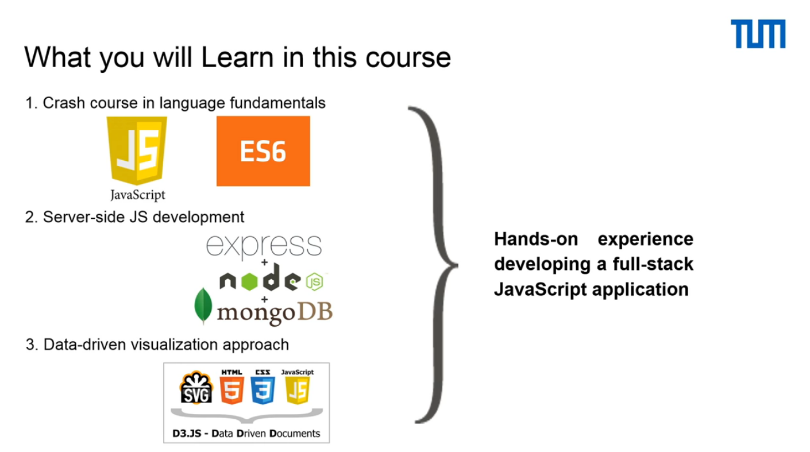
Let's see what is ahead of us and what we will cover over the next few modules. First, you will get a crash course in JavaScript. It is important to remember that we adapted it as lectures and code examples to be compatible with ECMAScript 6, the latest JavaScript standard.
Then, we will cover the basics of writing JavaScript code on the server using Node.js, Express and MongoDB.
Finally, in the last part of the course, you will learn how to bring data to life using a stack of data visualization techniques. All parts of the course are accompanied with hands-on exercises that will help you put your new skills to practice.
Now, looking at the schedule – in the next module number two, Tatyana will show you how easy it is to get started with JavaScript and she will introduce you to the language fundamentals. After completing this module, you will be well on your way to write simple JavaScript programs.
Next is the object and function modules, in which Dimitri will show you how you can take advantage of one of JavaScript's most powerful features - its flexibility. JavaScript flexibility gives you the freedom to write JavaScript object-oriented code, as well as use functional programming.
In module number four, Christian will introduce the wonders of Node.js and show you how you can quickly and easily write JavaScript code that will run on the server.
Then, in the data visualization module, Dennis will introduce you to the most relevant technologies we use today to visualize data on the web. At the final module, we will meet Professor Rost who will describe a few applications of JavaScript in the Life Sciences.
I then will summarize this course before we part. Right now, I'm sure, you're already excited about learning how to work with JavaScript. So, let's not waste any time and head straight to the next module language fundamentals.
Welcome to the language basics module!
Together with HTML and cascading style sheets, JavaScript is one of the core technologies for building websites. However, JavaScript is not only for building websites, it can also be used for game development and application development.
While JavaScript may resemble general-purpose programming languages, such as C, for instance, it still has very distinct features.
For instance, it is an interpreted language that does not require data typing and its code is being evaluated during program execution.
In this module (1), we will make our first steps and learn the basics of the language. Tatyana will first show how to edit and run your code. She will then survey some of the most essential parts of the JavaScript language. Tatyana is an experienced data scientist and a JavaScript developer. She uses JavaScript'ing at work researching bacteria's role in disease.
Welcome to the first lecture of the lexical structure module!
Getting started with JavaScript is easy. All you need is a web console, which is included in any modern browser of your choice. It is always a good idea to work with the latest version of a web browser to fully enjoy the strength of JavaScript.
A web console shows information about the currently loaded page. It also provides you with a command line that allows you to execute JavaScript directly in the current page.
There are two ways for opening the console: you can either press the combination of three keys ctrl shift + I or you can open it through the menu of your browser.
In Firefox, you click on menu, select developer menu and then the dev console.
In Chrome, you also first click on menu, then select tools, where you find developer tools, which will open the web console for you.
The dev console appears at the bottom of the browser window and the command line, framed in the blue box on the figure, will be ready for you to enter the JavaScript code.
You can try out the console by typing the instruction: console.log hello world and you will see hello world appearing in the console below your command.
These instructions are also called statements in JavaScript. Similar to C, C++ and Java, JavaScript statements end with a semicolon.
In principle, you can omit the semicolon at the end of your statement. JavaScript will add it for you. However, it is considered to be a bad practice to do so.
Semicolons allow your code to be more readable and they also make sure that your code is free from side-effects.
JavaScript is a case-sensitive language.
This means that language keywords, variable and function names must always be typed with a consistent capitalization of letters.
For example, a different capitalization of the name myvar will be understood by your program such that if you are using three different names.
All JavaScript programs are written using the Unicode character set. The standard Unicode set supports virtually every language currently used on the planet, making JavaScript independent of the operating platform and the language used.
JavaScript ignores white spaces, tabs and newlines that appear in your code, except if they are part of a string or a regular expression.
Because of this feature, you can format your programs in the neat and consistent way. And, in general, it is a very good idea to format your programs, because formatting makes your programs easy to read and understand.
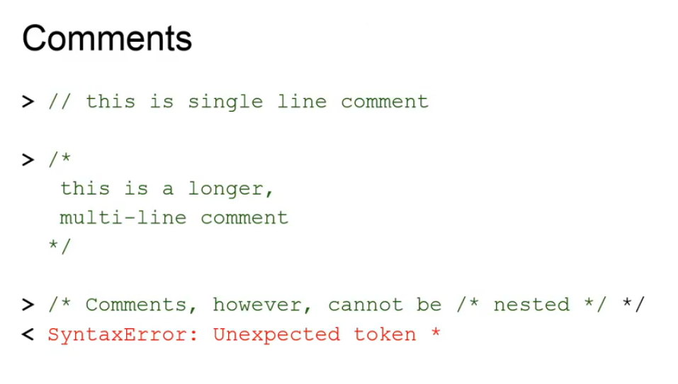
JavaScript supports, as some other programming languages, two styles of comments. Namely, any text written after two slash characters up to the end of a line is treated as a single line comment and is ignored by JavaScript. Also, text written between slash star and star slash characters is also treated as a comment. You can span these comments over multiple lines. You can't, however, nest comments, as it will result in a syntax error shown in your console.
Variables are symbolic names for values in your code. The names of variables are called identifiers and they conform to certain rules.
For example, an identifier can start and contain only letters, numbers, underscores or dollar signs. An identifier cannot start with a number. Identifiers are always case-sensitive and, finally, identifiers cannot match any of JavaScript reserved words and what they are we will see on the next slide.
JavaScript reserves a number of identifiers as keywords of the language itself.
The words listed on this slide cannot be used as identifiers in your programs, because they are part of the JavaScript syntax and have a special meaning for JavaScript. These include break, case, catch, class and others. There is a number of other keywords not listed on the slide that are reserved for future versions of JavaScript and therefore should also not be used. Please refer to other sources for the complete list of these keywords.
Before a variable can be used in JavaScript, it needs to be declared. Note that, while declaring a variable is not a requirement, it is considered to be a best practice to do so and is highly encouraged. Declaring a variable can be done in three ways.
First, by using the keyword var. The keyword var tells the program that variable can be used both globally, throughout the whole program, if it is declared outside of a function, or locally, meaning that the variable can be used within the function it is declared. Note, in our example the variable x has no value specified.
Second, we can declare a variable by assigning it a value. Doing so, we always declare a global variable that is a variable available throughout the whole program.
Finally, we can declare a variable using the keyword let, which tells the program that the variable is only available within the block scope of its declaration.
An identifier with an associated constant value, that is a value, that cannot be changed anymore, is called a constant. Constants are declared with a const keyword and have to be initialized upon declaration.
Trying to re-declare the constant with a different type or trying to assign a new value to it, will result in a type error printed in your console.To print out the declaration of a variable, it is sufficient to just enter its identifier name in the console. If the variable is undeclared, the console will return the reference error ‘error message’. If the variable is declared, but, for some reason, not initialized, meaning it has no values assigned, then the console will return the value is undefined. And, if a variable is declared and initialized, for example, the variable C is initialized with the value of 3, then accessing the variable will result in no error message printed to the console.
So far, we talked about variable names, the identifiers and variable declarations using the keywords var, let and const.
Ideally, each variable is assigned with a value. A fixed value that is literally provided to a variable is called a literal. There are several types of literals, including integer floating-point, string, boolean, regular expression, array and object literals.Welcome to data types, the second lecture of the JavaScript language basics module.
In the previous lecture, we talked about JavaScript language syntax and defined the term variable. We learned that a variable in JavaScript needs to be declared and ideally initialized with a value. In the current lecture, we will learn different types of values that a variable can be initialized with.
JavaScript is an un-typed language. This means that unlike in other languages, such as Java and C, in JavaScript we do not declare the data type of variables explicitly. JavaScript automatically converts one data type to another when it's needed. For example, it can append numbers and strings by automatically converting numbers to strings. Data types in JavaScript can be divided in two groups - primitive types and reference types. String, number, boolean, undefined and null are primitive data types. Objects and arrays are referenced data types.
While primitive data types have a fixed size and memory, for example, a single number occupies 8 bytes in memory, reference data types do not have a fixed size. For example, arrays can contain any number of elements and therefore an array cannot be stored in 8 bytes of memory. Instead, it can hold a reference to the values and that's why it is called a reference type.
Let's have a closer look at the primitive data types. Numbers are a basic data type. All numbers in JavaScript are represented as one type floating point values.
JavaScript numbers can be positive and negative, and can also be represented using the scientific exponential notation. Numbers without decimals or exponent notation are integers. Integers can be as large as 2 to the power of 53 and as small as minus 2 to the power of 53. Using integers outside this range may lead to a lower precision in the representation of your number.JavaScript provides standard arithmetic operators for numbers, such as addition, subtraction, multiplication, division and modular. JavaScript also provides special numeric values, such as infinity and not a number. If a value becomes smaller than the smallest possible number that can be represented in JavaScript, then minus infinity is printed for this value. The same rule applies to large values that are larger than the largest possible number that can be represented in JavaScript. For these, JavaScript prints infinity. If the outcome of a mathematical operation is an undefined result or an error, then JavaScript prints not a number value, also known as NaN.
One of the drawbacks of JavaScript numbers is that floating arithmetic may not always be accurate. To overcome this problem, multiplication and division can provide help. In addition to standard arithmetic operations, there is also a large number of mathematical functions that can be used in JavaScript. All these functions are stored as properties of a single Math object. So, you always need to use the object name Math to access them. For example, to compute 2 to the power of 10, you can use the power function of Math.
We can use string literals to represent any text in JavaScript. The text can be enclosed in matching pairs of single or double quotation marks. It is possible to insert a special character in a string by using the escape backslash character. Finally, the length of a string corresponds to the number of characters in it. Like in many other programming languages, the first character in a string has position index 0.
In contrast to number and string datatypes, the boolean type has only two values - true and false. A boolean value represents if something is true or not.
In a numeric representation, true evaluates to 1 and false evaluates to 0.
Typically, boolean values are used for comparison in JavaScript programs, for example, to check whether two values are equal or not, if their values and data types are equal or not, or if one value is larger or smaller than the other value. Another important data type is called undefined.Undefined is returned when the variable was declared, but never initialized. That means, it never got a value assigned to it. It is also possible to manually assign undefined to a variable as a value.
The last primitive data type is called null. Null means nothing and is used to indicate an absence of a value. It is considered good practice to use null in your code instead of undefined. The variable foo in our example is assigned the value null. It means that foo has neither type nor value.
So, why to use this data type at all? Well, it can become very handy, actually. When used in boolean context, null converts to false. And when used in a numeric context, null converts to 0. Note, that null does not equal undefined. If the values of both types are compared, then true is returned.
However, if both values and types are compared, then false is returned.
An object is a reference data type that consists of a collection of named values. These named values are also called properties, they describe the object. A property is a mapping between keys and values. Keys are always represented as strings and values can be of any data type. For example, the object king holds properties named first name, last name and age. Keys of the properties can be listed using the object dot keys function. A value of a property can be returned by calling the variable name of the object and the key name of the property.
Additionally, the value of any property can be changed by assigning it a new value.
An array is another reference data type, which also stores a collection of values. While each value in an object has a name - that's the key name - as we saw in the previous slide, the values in an array are indexed by a number. The first value in an array has index 0, the second value has index 1 and so on.
Similar to objects, arrays are dynamic and untyped, meaning that they can change their size as needed and can store values of different data types, including other arrays and objects. An array can be created, as shown in the example, after declaration and initiation. Any value in an array can be changed and new values can be added. The length of an array can be printed using the property called length.
As some viewers pointed out, in this video, there is a mistake in one code snippet example. The following:
var king = { firstName: "Ned", lastName:"Stark", age:40};
Object.keys(king);
< ["Ned", "Stark", "age"]
should actually state:
var king = { firstName: "Ned", lastName:"Stark", age:40};
Object.keys(king);
< ["firstName", "lastName", "age"]
A function is a block of code that performs a particular task. In the example, we define a function, called sumFunction, with two parameters: par1 and par2. The body of the function calculates the sum of par1 and par2, and returns the result. Once a function is defined, it can be invoked by its name, followed by the comma-separated list of arguments within parentheses. For example, the variable x invokes function sumFunction with arguments 3 and 4.
Once x is executed, its result, which equals 7, is returned to the console.
We will get back to functions in a few moments. Now, let us take a look at the concept of scoping.
Scope defines the context in which variables and also functions can be accessed. The lifetime of a variable starts when it is declared.
A variable declared outside the function has a global scope. Global variables can be accessed and modified throughout the program. In contrast, a variable declared within a function, has a local scope. Local variables can only be accessed and modified within that function. Global variables are declared with a keyword var.If a variable is initialized without being declared, it is automatically considered to be global. Global variables are available to any code in a JavaScript program. For example, the variable x declared outside the function printVar(), in the example, has a global scope and can therefore be accessed and modified from anywhere in the code. Calling the function printVar in the console will result in the value 1 to be printed.
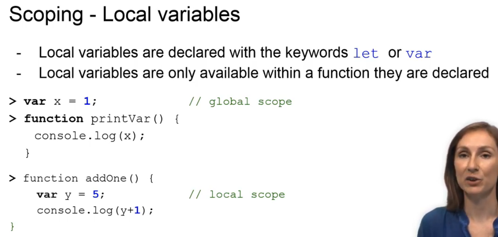
Local variables are declared with the keywords let or var. In contrast to global variables that are accessible and modifiable from anywhere in the code, local variables are only available within the function they are declared. Let's have a look at the code example.
Printing x at the bottom of the code will return 1, because x has a global scope. However, printing y at the bottom of the code will return a y is undefined error, because y has a local of scope.Hoisting means moving a variable declaration to the top of the script or a function. This means that the declaration of a variable is used before the variable is actually declared. Only variables declared with the keyword var can be hoisted. Hoisted variables return undefined. It is important to mention that only the variable declarations are hoisted, not variable initializations or assignments.
In our example, the variable x is declared with a var and can be hoisted to before the console log y statement, while the variable y is declared with a let and thus cannot be hoisted. Function declaration is also hoisted. This way, we can invoke a function before it is declared. Hoisting lifts the declaration of a function to the top of the block.
In the first example, the declaration of the function addOne is lifted to the top, which allows us invoking this function without error message being shown. It is important to mention that only function declaration is hoisted and not the function expression. The function expression, basically, corresponds to the function being assigned to a variable and, therefore, the rules for variable hosting apply. Namely, that the variable declaration is moved to the top, but not the variable initialization.Welcome to our fourth lecture of the language basics module!
In this lecture, we will learn about the concept of loops. Loops are used to execute the same block of code repeatedly until a certain condition is met.
For example, one way of printing all integers from 0 to 9 can be to use 10 statements of console.log.
A shorter way is to use a for loop with a variable that changes with each iteration of the loop.
There are several options of how a block of code can be repeatedly run in JavaScript.
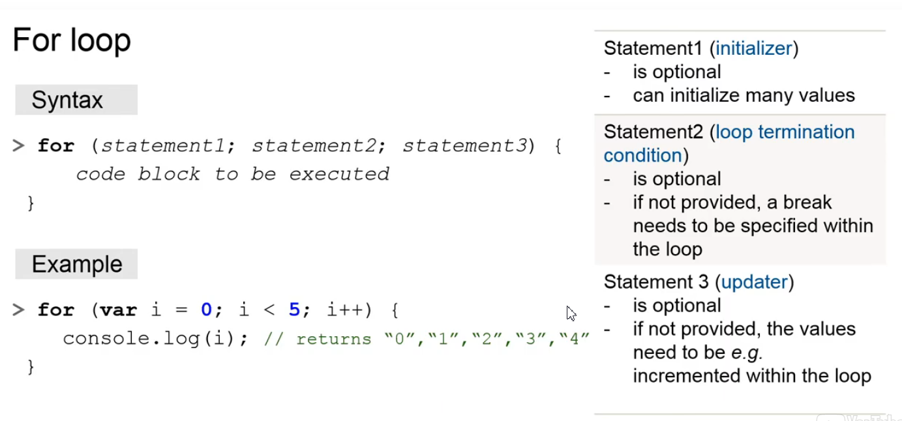
The for loop is probably the most frequently used loop in any programming language.
It consists of three segments separated by a semicolon.
The first statement initializes one or several values and is executed exactly once.
In the example below, statement 1 is the initiation of the loop counter i. The second statement is the loop termination condition, which is i less than 5 in the example.
Once this statement evaluates to false, the loop terminates.
Finally, the third statement is the updater i++ in the example.
This statement is invoked after each loop iteration.
Typically, it increments or decrements the counter. All three statements are usually written in one line and each of them is optional.
A [“for in”] loop is especially useful when working with objects. It iterates over the properties of an object and returns the name of each of the properties. In the example, at each iteration of the loop, the variable i is set to the name of each property of the object king.
At each iteration, the value of [i] is printed to the console.
As a result, we have the strings:
first name, last name and age printed. While the “for-in” loop is great for iterating over object properties,
the [“for of”] loop should be the choice when iterating over array values.
As a matter of fact, using for of for other referenced types fails with a type error.
If using the for in loop for an array, then the indices instead of values are printed, as shown in the second example.
The for loop is repeated a specific number of times. The while loop in contrast, is repeated an unknown number of times as long as a condition is met. A while loop works by first evaluating its condition.
If it is true, the code block within the while loop is executed until the condition evaluates to false. Once false, the while loop terminates.
Note, it is very easy to create an infinite loop if the condition never evaluates to false.
In the example, we print the numbers from 0 to 4 by initializing the counter i and incrementing it by 1 in each iteration step. We check if i is smaller than 5.
If this is the case, then the program prints the updated value of i.
The while loop first evaluates the condition and then executes the code if the condition is true. The do while loop does it in the opposite way.
It first executes the code and then evaluates the condition.
Because the condition is evaluated only after the code is executed, the code is executed at least once even if the condition is false.Welcome to the fifth and the last lecture of the language basics module! In this module, we will learn about conditional statements. An example for conditional statement could be the following:
"If you know Java script, you can implement a web app". Conditional statements are used to perform different actions based on different conditions.
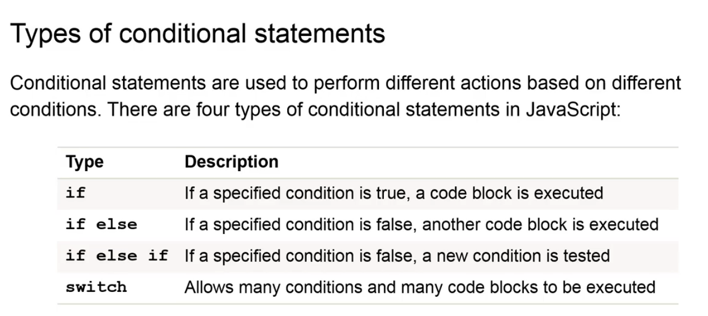
There are four ways to construct a conditional statement in JavaScript.
First, if a specified conditional is true, a code block following an if statement is executed.
Second, if a specified condition is false, a block following an else statement is executed.
Third, if a specified condition is false, a condition following the else if statement is evaluated.
Finally, a switch statement compares the values of the switch expression with the values to the switch cases and executes a code block associated with a match.
[If] statement includes the condition to be evaluated and the block of code to be executed in case the condition is true.
In the example, the code block is executed in case the variable x holds the value larger than zero.
[“If else”] statement includes the condition to be evaluated and the block of code to be executed in case the condition is true.
It also includes a block of code to be executed in case the condition is false. In the example, the program evaluates if the variable x is larger than zero.
If true, the variable text is set to "x is a positive number". Otherwise, text is set to "x is zero or a negative number".
An [“if else if”] statement evaluates a new if condition, if the first if condition is evaluated to false. If a subsequent if conditional is evaluated to true, then the block of code that follows this else if statement is executed. In the example, the program evaluates if the variable x is larger than zero.
If true, the variable text is set to "x is a positive number".
If the value of x is smaller than zero, the program sets the variable text to "x is a negative number".
If both if conditions are false, the program sets the variable text to "x is zero".
A switch statement compares the values of the switch expression with the values of the switch cases and executes a code block associated with the match. A switch expression is specified at the top of the switch statement.
Switch cases are evaluated from top to bottom.
Once a match is found, the block of code following the match is executed.
If there is a break statement within this block code, then the whole switch statement is terminated and the program moves on.
Now, attention, in case there is no break statement, execution goes through all consequent code blocks until a break statement or until the very end on the switch statement.
Finally, the default keyword can be used within a switch block to specify a block of code that executes if no matches are found.

As we mentioned at the introduction to this module, JavaScript may resemble general-purpose programming languages, but it is also very different.
As we've seen, JavaScript is un-typed, which means that you can assign any data type to variables and convert them during runtime. As Tatyana also pointed out, JavaScript has a distinct feature, called hoisting, which calls variable declarations to the top of the function or to the top of your program.
Finally, JavaScript has more in common with functional programming languages and we will find out more about that in the next module.
Remember that JavaScript is a very forgiving language that will allow you to do many things without complaining. This gives the programmer a lot of power, but can also lead to many mistakes.
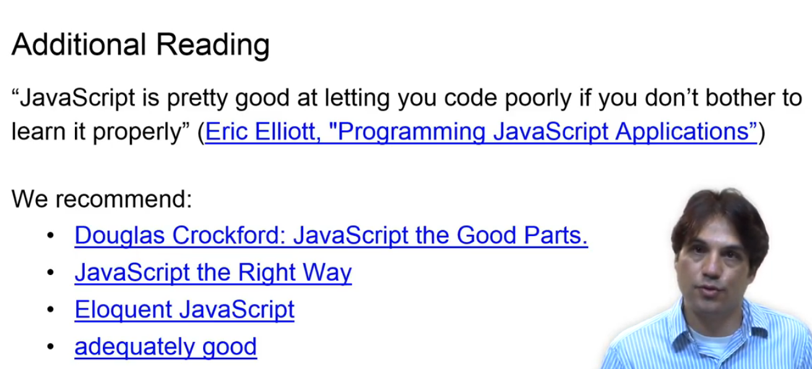
These fine references provide great guidance on how to properly and effectively write JavaScript code.In the next module, Dimitrii will talk about functions and objects, and show you how you can use those to structure your Javascript program.
Welcome to the functions and objects module! As we mentioned in the intro to the previous module, JavaScript has a similar syntax to other multi-purpose programming languages. However, JavaScript is also different in the way that it allows developers to use different programming styles. JavaScript allows developers to take advantage of two programming paradigms. Namely, the prototypal inheritance and functional programming. These two programming paradigms are called by Eric Elliott the two pillars of JavaScript.
In this module, Dimitrii will walk us through the basics of working with objects and how we can write object-oriented code in JavaScript. Dimitrii will then talk about dynamic use of functions and how functions and closures are used to scope and structure our code. Dimitrii is a master Informatics student at the TU of Munich. In his recent past, he has worked on processing massive amount of data and became passionate about turning data into knowledge. Dimitrii has five years’ experience in JavaScript development and he's also a tutor of the introduction to JavaScript course in the TUM.
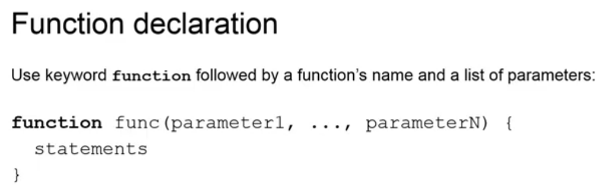
To declare a function use keyword function followed by function's name, a list of parameters in parentheses and function's body that is manipulations that this function does in curly braces. Another way to create a function is by using a function expression. A function expression consists of the keyword function, list of parameters and a function's body. A name is not mandatory. We can assign a function created with a function expression to a variable. Although, a name in a function expression is not mandatory, we still can use it. However, in such a case, we will only be able to invoke a function by its name inside the function.
A function declaration and a function expression both define functions. What is the difference?
Well, as we have seen, a function declaration requires a name, while a function expression does not. We have also seen in the previous module that function declarations are hoisted; that is, they are moved to the top of the script.
Finally, we can't use function declarations inside loops, conditionals and other control statements, while function expressions have no such limits. Working with arguments is the same for functions created with function declarations and function expressions.
Let's first make our language clear here. A function has parameters and takes arguments. When we define a function, we list its parameters.
When we invoke a function, we pass arguments. JavaScript allows us to define a function with one number of parameters and invoke it with a different number of arguments.
In this example, we have defined a function with two parameters and invoked it with only one argument. As we can see, parameters with no corresponding argument will have value undefined.Still, we don't always have to pass an argument for each parameter. JavaScript allows us to specify a default value for a parameter. Here, we have defined a function that performs an exponentiation operation and has two parameters - a base and a power. If we do not pass an argument for the power parameter, it will be equal to its default value - 10.
What if the number of variants is larger than the number of parameters?
Well, excessive arguments will not be assigned to any parameters. They simply will not be used. However, they are not discarded and we still can access them thanks to a special variable - arguments. An argument object contains all the arguments passed to a function. JavaScript functions always have a return value.
By default, a function returns an undefined. If we want to return a different value, we have to explicitly specify it using the return keyword.
In the previous module, we have learned that a JavaScript object is a set of properties of Key, Value pairs.
JavaScript objects are mutable, passed by reference and they can have arbitrary properties with values of any type.
Arrays, functions, regular expressions and dates are objects as well.
We can create an object by invoking the standard object constructor with a keyword new.
Having created an object, we can add desired properties one by one.
Let's create an object that describes our online class.
First, we invoke the object constructor, then we define properties - name and year.
If we type the name of our variable in the browser console and hit enter, we will get a representation of our object.
We don't have to add properties one by one to an empty object, though.
An object literal that is a list of properties in curly braces allows us to specify object's properties at once.
An object property has a name and a value.
We can use valid JavaScript identifiers as property names and access such properties via dot notations.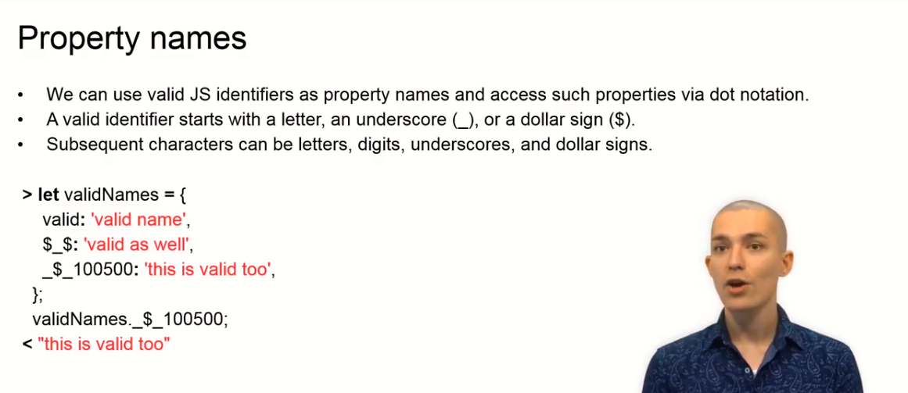
Remember, a valid identifier starts with a letter, an underscore or a dollar sign.
Subsequent characters can be letters, digits, underscores and dollar signs.
However, we do not have to use only strings that have valid identifiers.
JavaScript allows us to use any string as a property name. If a string is not a valid identifier, we have to quote it. To access such a property, we have to use square bracket notation.
A property value can be of any type, including functions.
Functions that are properties of an object are called methods.
Inside of a method, this keyword refers to the object the method is invoked on. However, beware of pitfalls of late binding that trip many beginning JavaScript programmers. We will cover it in details in lesson five.
This keyword allows us to manipulate object properties in its methods.
Here, we define an object that describes our class. It has properties name, year and print.
Print is a method that prints object's name and the year together.
We have already seen defining and accessing properties.
We can also change and delete them. To change your property, we simply assign a new value.
Delete operator allows us to remove a property from an object.
Remember, using delete operator is not the same as assigning undefined to a property.
When we assign undefined to a certain property, it is not removed.
So, an object still has property with its name and value undefined.
Delete, on the other hand, completely removes a property from an object.For in loop allows us to iterate over objects properties names. Once we have a name, we can get a corresponding value by using the square bracket notation.
We can also check if a certain property exists using hasOwnProperty method.
This method takes a name of a property as an argument and returns true if such a property exists. Otherwise, it returns false.
An important thing to remember is that an object is only equal to itself.
In other words, equality operator returns true only if both variables hold a reference to the same object. It will return false in all other cases, even if objects have the same set of properties with the same names and the same values.
Oh, by the way, just two slides ago we have invoked hasOwnProperty method on our objects, right? But we have never added this method to our objects. Yet, we still are able to invoke it. Why? Because prototypes!
In JavaScript, each object has a special connection to another object - to a prototype.When we try to access a certain property that is absent in an object, JavaScript will look for that property in the prototype. We can say that object inherits its prototype properties. Special object object.prototype is a prototype of all objects created via an object literal or an object constructor. Object.prototype has hasOwnProperty methods and that's exactly what we have invoked.
A prototype is an object and we know how to add properties to an object.
So, what happens when we add a property to a prototype?
All objects inheriting from this prototype get immediate access to the new property. Let's add a new property called easterEgg with a value "Hello, world!" to the Object.prototype.
Having done that, we can immediately access easterEgg property from our cls object, which was created via an object literal and inherits from Object.prototype.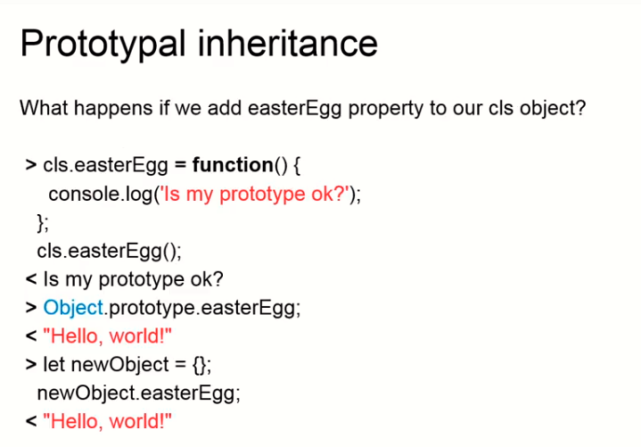
So, what will happen if we add a property with the same name easterEgg to our cls object?
Will it have any effect on the Object.prototype?
Let's try it. As we can see from this example, adding such a property to one specific object does not effect that prototype and, consequently, does not affect all other objects inheriting from the same prototype.
As we have seen, JavaScript allows us to write programs in object-oriented way.
Object-oriented programming paradigm means we model our program as a set of objects. Objects are a combination of data and behavior.
Methods represent behavior, while attributes, these are properties that hold data, are data.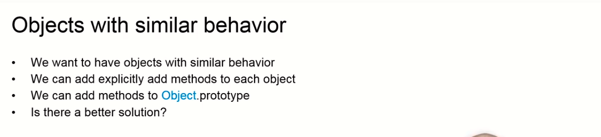
We also want to define groups of similar objects, objects that have similar attributes and behavior. For details about object-oriented programming paradigm, visit the following link. Now, let's return to our objects and our concerns. So, we know how to create objects that combine data and behavior.
How can we create groups of similar objects? Consider this example.
Imagine swordsmen in a video game. They all have hit points and they all can attack with a sword. We want to be able to create several swordsmen. How can we do that in JavaScript?
We know that we can create how a swordsman with an object literal explicitly defining attributes and methods each time. That is tedious!
We also know that we can add methods to the Object.prototype.
Hmm, that is dangerous and is actually considered an anti-pattern.
Let's say, first we add our attack with a sword method to the Object.prototype.
Then, we decide, we also want to have archers and add shooting arrow method to the Object.prototype.
Now, swordsmen have shooting arrow method and archers have attack with a sword method. Is there a better way?
Yes! There is!
With constructor functions we can create groups of objects. Each object belonging to a group, has similar contents and behavior.
How exactly does a constructor function work?
First, we invoke it with a new keyword.
New keyword creates a new object.
The value of constructor function special property, called prototype, becomes the prototype of the newly created object.
The keyword this returns our new object inside the constructor function, allowing us to define and initialize object's properties.
Each function has a prototype property.
The value of prototype property is an object.
This object becomes the prototype of every object created by a corresponding constructor function. As we can see in this example, once we add methods getTotalDamage to Swordsman.prototype, object Swordsman created by Swordsman constructor function inherits this method.
Thus, constructor functions allow us to easily create groups of objects with similar behavior and data.
We can add properties of any type and not just functions. However, adding attributes, that is data properties to a prototype, is an anti-pattern.
Why?
Can you imagine what will happen if we make hitPoints a property of a prototype?Welcome back to functions! In this lecture, we will take a detailed look at working with functions arguments, scopes and variable shadowing, and one of the most powerful features of JavaScript - higher-order functions.
Let's look again at the arguments object.
It contains arguments passed to a function.
We can access a specific argument by index.
We can use length property to get number of passed arguments.
Arguments object looks like an array, but, remember, it is not an array.Arguments object does not have array methods. We can see in this example that attempting to invoke an array's method indexOf results in a TypeErrorpart 2.
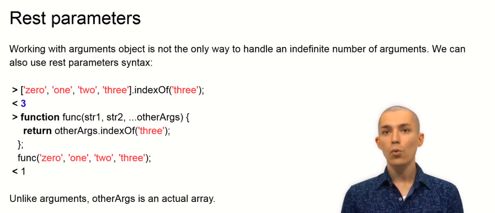
Working with arguments object is not the only way to handle an indefinite number of arguments. Rest parameter syntax, which is very simple - three dots before a parameter name - allows us to catch all arguments starting at a certain position and assign them as an array to a parameter.
In this example, we define a function using rest parameters syntax and invoke it with four arguments. First and second arguments are assigned to respective parameters, while the rest are assigned to third parameter.
Automatic semicolon insertion is one of the most controversial features of JavaScript.
It is described by a somewhat intimidating specification, but we don't really have to know it by heart. However, please remember that we have to put the returned value on the same line as return keyword.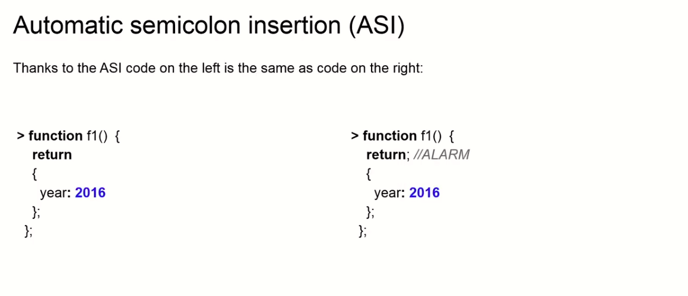
Otherwise, a semicolon will be inserted right after return keyword, which means that a function will return undefined.
Now, let's look into scoping.
Each function creates a new scope.
A variable declared in a scope is accessible inside all of the inner scopes.
Let's rephrase: inside a function we can access all of the variables declared in these functions outer scope.
We can both read and write such variables.
In this example, a variable is declared and initialized in the outer scope.
Then, it is changed in the inner scope created by a function.
Of course, this change exists not only in the inner scope, but in the outer scope as well.
Declaring a variable with the same name as a variable in an outer scope blocks access to the outer variable in an inner scope.
Here, we declare and initialize a variable in the outer scope and then declare and initialize a variable with the same name in an inner scope.
An outer scope variable is shadowed by an inner scope variable.
That is, manipulations with an inner scope variable have no effect on an outer scope variable.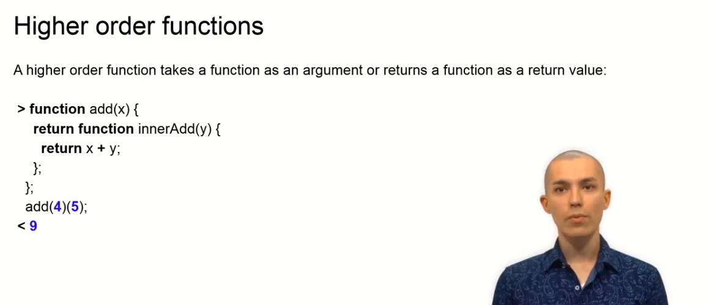
Higher-order functions are one of the most powerful tools in JavaScript's arsenal.
What exactly is a higher-order function? Well, a higher-order function is a function that takes a function as an argument or returns a function as a return value.
Here, we see a function that returns another function.
Let's take a closer look at this example. What exactly is going on here?
We have defined function add that takes an integer as an argument and returns another function innerAdd.
innerAdd also takes an integer as an argument and returns some of these integers.
Do you understand how we invoke this function with two sets of parentheses?
First, we invoke add with four as an argument that returns innerAdd and we immediately invoke it passing 5 as an argument.

Wait a minute! We invoke innerAdd after add function has been invoked, right? It's done, it's over. So, how can innerAdd access variable X?
To understand that we need to understand the idea of closures.
JavaScript inner function has access to outer variables even when an outer function has been run.
We can say that a function *encloses* its environment.
Thus, a closure is function plus function's context. Immediately invoked function expressions are very often used together with closures in JavaScript.What is it? Well, it's simply a function expression that is immediately invoked!
Using immediately invoked function expression, we create a function in this example, declare counter value variable and initialize it with zero.
Then, we return another function that has access to counter value variable.
Each time we invoke resulting function, it increases counter value and returns it.
There is no other way to access counter value, but through this function.
We already know that constructor functions and prototypes allow us to create groups of similar objects of objects with similar data and similar behavior.
But we have a problem.
We can't control access to objects properties. Our swordsman's properties are exposed to the outside world. And that is a problem, because any piece of code can directly change hit points.
Consider this example:
Let's say, we've been exposing swordsman's
hit points and directly changing it from other parts of our code,
subtracting damage from hit points directly.
Now, we decide to
implement different types of armor with each type reducing damage by a
certain percentage. That means, we have to go over all places where we
directly interact with hit points and take armor into account.
This problem is solved in languages, such as Java and C++ by declaring some attributes as public exposed to the outside and others as private that is accessible only by the objects methods.
Unfortunately, JavaScript has no mechanism of declaring certain attributes as private. Is there any way to solve this problem? Indeed, there is and we have already seen it.
Closures allow us to create variables that can only be accessed by an enclosing function.
We're going to use closure now to hide swordsman's damage and attacks from the outside.
We have turned objects properties damage and attacks into variables in a constructor function. getTotalDamage, being an inner function, has access to these variables. It keeps access even after constructor invocation has been completed. Can we somehow access them as objects properties? Well, in this example, we try to do exactly that - we try to use parameter name dmg and variable name damage, but all in vain.
Thus, objects methods getTotalDamage has access to damage and attacks variables. But there is no other way to access these values from the outside. They are safely hidden.
Okay! We know now how to create groups of similar objects and how to implement access control. Are we golden now? Unfortunately, we are not!
Prototypes and closures are mutually exclusive in a certain sense, because prototype methods cannot access data hidden within closures. Thus, we have to choose between access control with closures and code reuse with prototype chains.
Did I just say prototype chain? Oh yes, I did! We can create an object via constructor function and make this object a prototype of another object, building a chain of prototypes.
In this example, we define a constructor function Lannister. We add battleCry method to the corresponding prototype. Then, we define another constructor function Swordsman and make an object created with the Lannister constructor a corresponding prototype for Swordsmen constructor.
Finally, we create a Swordsman object with a Swordsmen constructor. Prototype of Swordsman object is an object created with a Lannister constructor, whose Prototype is a Lannister.prototype object. Thus, Swordsman object inherit methods from Swordsman.prototype and Lannister.prototype.
There is an even simpler way to do it.
Object.create method allows us to create objects with custom prototypes without defining constructors. It takes one object as an argument and then returns another object, whose prototype is the first object.
When we invoke a specific method on an object, JavaScript first looks for a method with a given name in the object.
Then, in the objects prototype, then in the object’s prototypes prototype etc, etc, all the way up to the Object.prototype, which is always located at the very root of prototype hierarchy.
The first found method is used.
We started this lecture praising constructors and saying that thanks to them we can create groups of similar objects. Unfortunately, it's not all roses.
Now we will mention dangers of constructors. These dangers stem from the fact that constructor functions are still functions. So, it's easy to confuse a constructor function and a regular function.
Calling a constructor function without a new keyword and conversely calling a regular function that explicitly returns an object with a new keyword are two common mistakes.
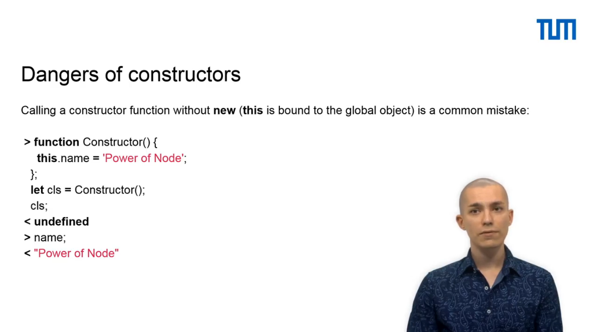
If we call a constructor function without a new keyword, then this keyword returns global object and we end up creating global variables.
If we call a regular function that explicitly returns an object with a new keyword, then our function will still return that object.
Functions are objects in JavaScript.
We have already seen prototype property.
Functions also have name and length properties.
The value of the name property is function's name.
In case of an anonymous function, it is an empty string.
The value of the length property is an amount of parameters.
We know that objects have prototypes and we know that functions are objects.
It's not surprising then that each function object is connected to a prototype as well.
Function.prototype is the prototype of functions.Functions inherit apply and call methods from Function.prototype.

Do you understand what these methods do in the current example?
apply and call methods allow to call a function as if it was a method of the object that is passed as a first argument.
In other words, this keyword returns passed object.
The first argument passed to apply and call methods becomes the value returned by this keyword.
Other arguments become arguments of the function.
Remember, call and apply treat them differently. call method takes these arguments simply as arguments, while apply method takes an array and turns it into arguments.
Since apply takes an array and turns it into arguments for function, we can use apply when we are stuck with an array.
In this example, we want to get the maximum value of an array of numbers Math.max method doesn't work with arrays, but we can easily solve this problem with apply.
A mnemonic allows to remember which of two methods takes an array. apply and array start and end with the same letters.
That's nice, but we have an even simpler way of unpacking an array of arguments.
Spread operator allows us to turn an array into arguments for function.
Its syntax is very simple - three dots before an argument.
Please do not confuse it with rest parameters.
If we are defining a function, it's rest parameters.
If we are calling a function, it's a spread operator.
Let's take a look at argument subject one more time, just one more time.
We know that it's not an array, but now we know that we can create an array with the same contents as arguments using call method.
Slice is an array method that returns a copy of an array.
Passing an argument's object to slice by a call or apply, returns an array containing the same elements as argument's object.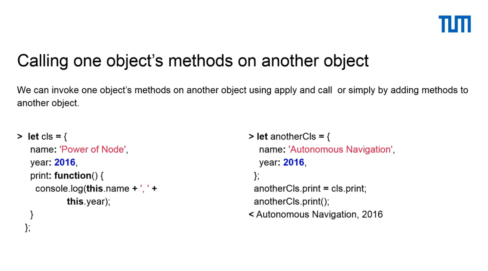
In JavaScript we can call one object's methods on another object using apply and call, or we can simply add methods to another object, as in the current example.
This is possible thanks to a very important feature of JavaScript, called late binding.
What's it about?
Well, late binding means that keyword this becomes bound to an object at the invocation time.
In other words, object returned by this keyword is selected only when we invoke a function.
However, there is one way to change this behavior.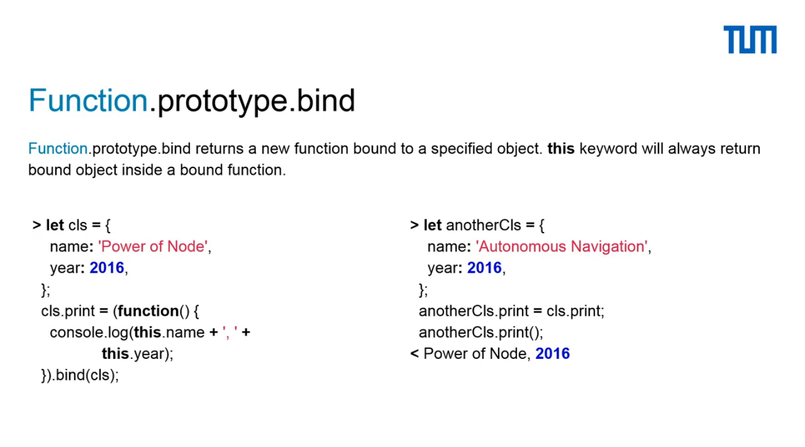
Function.prototype.bind method returns a new function bound to a specified object this keyword always returns bound object inside a bound function.
We can see in this example that even if we copy a bound method to another object, this keyword still returns the bound object.
The value returned by this keyword is decided at invocation time.
Hmm, but is there a default value?
In other words, what does this return if a function hasn't been bound to an object and is not invoked as a method, or via apply or call?
By default, this returns the global object.
In the browser, it's the window object.

However, we already know how to deal with such a problem.
We can either bind an inner function or cache value of this keyword in another variable.
For example, that or self and access it from an inner function.
In this example, we decided to use that.
In this module, we saw different ways of invoking functions. JavaScript has several ways to invoke functions.
We can call functions, invoke them as methods, use the new keyword or do indirect invocation.
These different invocations lend flexibility to the language when working with functions and objects.
We also saw different ways to create objects.
We can use built-in constructors or we can create our own custom constructors.
We learned how to create groups of object with similar behavior and data. And we also saw that we can solve access control problems with closures. This module showed the basics of using objects and functions, and would allow you to better understand how to structure your JavaScript code.

In the next module, Chris will show you how we can create JavaScript on the server-side using Node.js as well as other technologies.
Welcome to the server-side JavaScript module! JavaScript was developed as a scripting language that can only be run in the web browser.
Yet, modern web applications are not composed of one single component.
In the past, all of these parts could not be written using a single language.
For example, we could use PHP on the back-end and flash on the front-end.
Today, we can use JavaScript to develop the back-end part of the app using the node.js framework, while still using JavaScript to generate the dynamic content of the front-end.
Since the first version of Node appeared, many developers have found it useful and have chosen to build the back-end of their applications using JavaScript.
Chris is a master student in Informatics with a solid background in Software Engineering. He has over three years’ experience developing full-stack applications in JavaScript.
He is also a mentor in the Google Summer of Code program and the tutor of the Intro to JavaScript course, given at the TU of Munich. By his own admission, Chris really likes to turn pizza into code.
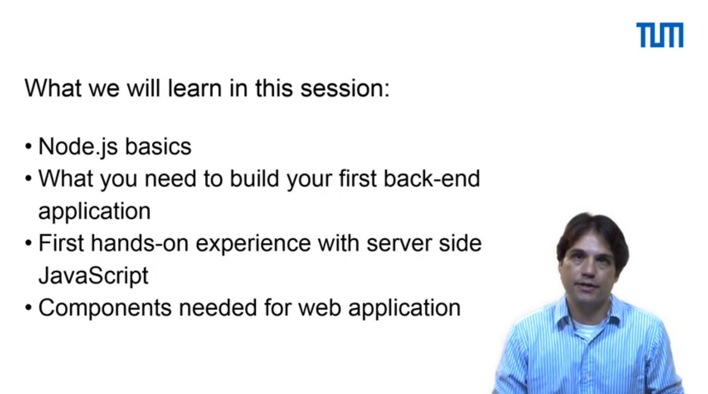
In this module, Chris will take you through the first steps of building a back-end JavaScript application.
Chris will review some of the technologies we use to handle data, control requests and present the results on the web.
You will also get a chance to experiment with node.js using code examples we provide.Welcome to this lecture about anatomy of HTTP transactions!
In this lecture, we're going to see how requests are made and what URL stands for.
Let's look at the first example.

What we see here is the browser that is trying to access a location on the web, which is example.dallago.us.
It tries to access the route and asks the server: do you have something to deliver to me?
The server will answer to the browser: yes, I have something for you and it's an HTML file, which is called index.html.
Later, when the browser executes the index.html, tt will most likely require some further components, which are specified in the HTML file.
These components are usually scripts and images.
In this specific case, we see that the browser is asking the web server again for a script, which is called script.js and an image, which is called image.png.
If everything went according to plan, the server will then answer to the browser: yes, I have these files and there you are.
In the HTML, the locations where we find these requests are tags like these.
This is a png or image tag, which stands for a location in which we want to load an image.
What we see later in the href, is a URL of where the image is to be taken from.
In this case, the image is located at example.dallago.us/image.png.
Most likely, in modern web pages, you see href references like this.
What these are, are relative paths. So, what we are saying here is: if we're executing our
HTML file, which is located in the root, we want to access the image in the same location, which is again the root.
We want to access the image at example.dallago.us/image.png.
This is different if the HTML was, for example, loaded from a subfolder of a web server, which could be, for example, the public sub folder. So, if we're executing an HTML file, which is located in example.dot.dallago.us/public and we have an img tag, like this one, which is trying to access image.png, what we're actually asking for is the image at example.dallago.us/public/image.png.
There are different types of requests that you can perform on the web. The ones that we have seen up until now, are get requests. They are what your browser usually always performs. There are also other types of requests, which are, for example, post requests.
They are used to create and update resources, and they're usually found in web forms on your web pages.
Third type of request are put requests. These are conceptually similar to post requests, but they are mainly used for updating. You can also use them to create resources, but you have to specify a precise URL where you want to put this resource in.
If we're trying to, for example, upload an image of a cat, which is called cat.png, what we would say is: we want to put our image at the location xample.dallago.us/cat.png.
The last type of requests that we are going to talk about are delete requests.
These requests are used to delete resources as the name says, so that we don't have them anymore on our web server.
There are other types of requests, but we are not going to discuss about them, because they are not relevant to the slide set.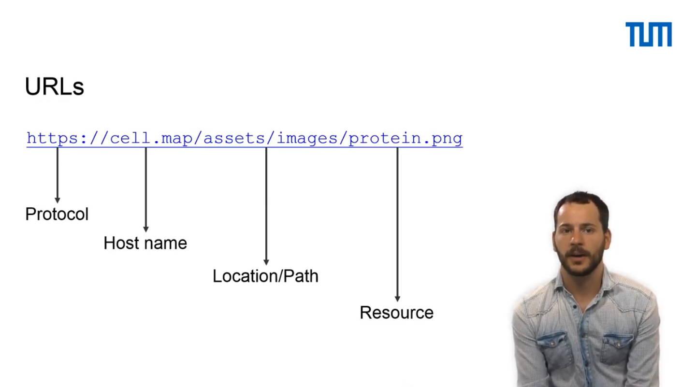
The next thing that we're going to talk about are URLs. There are different things you want to look at when you see a URL.
The first part is the protocol.
It's https in this case, but usually you see also http. There are actually two different kinds of protocols.
HTTPs stands for secure HTTP.
It ensures that when you're accessing a resource, the resource comes exactly from the server that you are requesting it from.
So, that you are not put in a situation of having someone between you and the web server, which can read the information that is flowing between you or your browser and the web server.
The second part is the hostname. This is a friendly name for a server on the web, which is usually addressed with a set of numbers, which we are going to see in the next slide.
The first part that we see here is the location or path.
These are usually subfolders on your web server and it's just as if you were opening sub folders on your computer.
The last part is the resource that you're going to ask and in this specific case is a png image and it's called protein.png.
Here is a different representation of the URL that we had before. We see in the first part the protocol and the hostname. The hostname maps to this address on the top, which is 10.129.31.45.
This is actually the way addresses are thought of on the web, but you can view them similarly as the address of where you are standing right now: your home or work address.
It's just within computer science. We like numbers, so we put them everywhere.
The second part that we see are subfolders. In this specific case, we're accessing assets and then we're accessing images.
The last part is a resource that we want to access, which is the image of this protein, which is called protein.png.
What we have seen up until now is JavaScript as it is used for front-end. It is used to extend normal HTML code to allow us to perform some nice and better functionalities with our code.
JavaScript, in these cases, is executed within the browser or the browser's console.
What we are interested in looking at next is, actually, JavaScript for back-end development. What this means is that we want to see how JavaScript can be used to answer requests, which come from the web, which is what we have seen up until now.
JavaScript is also able to be interpreted as an ordinary computer language, as you would, for example, do with python or C or Java and this is also being enabled by the same framework, which is called node.js, which we will look at into later videos.
That is used to create web backends or APIs, which we are also going to discuss in the next videos.
What is it? Node.js allows you to interpret JavaScript in your computer. It's similar at the way JavaScript is interpreted in your browser, but it allows you to access things, which are usually not accessible from within your browser. So, for example, it allows you to access files, you can read and write files on your system, and it allows you to access different layers of your system, for example, the network layer, which is used by Node.js
if you build a web application. It provides you with the tool to use the same language and concepts that you have already used to build JavaScript for the front-end, which means the language is still an event-based, it's still asynchronous, it uses callbacks and things like these. When you run Node, it actually runs on a single thread, which has 1.8 Gigabytes of RAM allocated to it. As I said, it provides you with different libraries that, for example, let you read and write files on your system. With Node, you can build many things.
The most important ones are three: you can build command line scripts, you can
build API's or web applications with back- and front-end. Command line scripts are what you would usually write with bash, C, Java, Python. You can write scripts that allow you to read files on your system and then produce some output, always in the system.
An API is a web service that allows you to send and receive messages on the web. It is what most of your applications use, especially if they are cross-platform. So, for example, if you have an application that is running on your smartphone, your computer or your tablet, usually the programming language of the application itself is very different. But they all communicate with the server. And this communication happens over API calls. API calls, as I said before, is just a means of sending and receiving data.
And with Node.JS, you're able to write very quickly and very nice APIs. The last thing that you can build with Node is a web application - a complete web application. That means a web application that has both back-end as well as front-end. It is as if you were to build an API, but you were to extend it with some views. Views, specifically, are things that you see. So, when you connect to, for example, an address on example.dallago.us, you see a web page.
And that's exactly what a front-end is! It provides you with the tools to build these views, to reuse them and to use the code from the server to, for example, give meaningful objects meaningful data to the view itself.
So how is Node different from things that we have already seen in the past? The traditional approach of – for example PHP and Apache - is that whenever a request is coming into the server, Apache starts a new a new thread, a new process, on your machine to answer exactly this request. So, the request is the code of where the request is executed linearly as we see above - one request one function after the other.
And once it terminates, it answers back to the requester with some data. Node's approach instead is to run the entire Node engine on one single thread.
If requests come to this one single thread, the Node engine puts them in an event queue.
This event queue basically executes the function and once the function is terminated, it runs a callback function.
We have already seen this in previous lectures.
When a request comes in, as I said, it gets put in the event queue.
The first function gets executed, then the second function gets executed, which is the callback, and then the third and so on, until a response is provided to the requester.
Once this response is provided, the callback will terminate and the request will have been answered.
When you install Node, you also install NPM, which is its companion. NPM stands for Node Package Manager.
It is a set of tools, libraries and packages that allow you to expand your application or to download, for example, some nice scripts.
As I said, it provides the packages for both front-end as well as back-end and it provides you a library of scripts.
You can imagine Node to be your smartphone where when you buy it, you have a phone app and a messaging app, and NPM to be your App Store where you can download every kind of application.
NPM, though, is not like an application on itself.
You can download applications, which are scripts in this case, but you can download specifically extensions, which are the things that you use when you build applications using Node.
As with every App Store you have to be very careful: there are some good apps and there's some bad apps.
You can easily find what is a good application, and what is a bad application by looking at the documentation of this app.
Same thing is for NPM.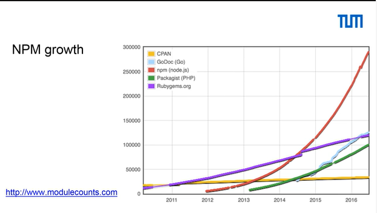
Let's look at the growth of NPM over the years: you can definitely see by the red line that it's above everything else. Specifically here, we have a package manager for Ruby on Rails, a package manager for PHP, a package manager for GO, which is a Google initiative and a package manager for CPAN, which is Perl. There is nothing growing as NPM. So, you're on the safe side if you start coding now with Node.
As I said earlier, you can use Node as a scripting language to create scripts on your computer that execute like if they were, for example, Python or C programs.
In this case, we took the example of ParseJS, which is actually a tool that I have written myself a couple months back.
What ParseJS allows you to do is to translate comma separated values into JSON objects. Specifically, an array of JSON objects, because we have more than just one comma separated values file. So, what this tool allows you to do is to say I have a file with comma separated values, please translate it into a JSON file with an array of all the exactly same objects, but in JSON format.What is actually JSON? JSON stands for JavaScript Object Notation. It's a way to represent objects in JavaScript. It's actually not just used in JavaScript, it's a very commonly used for data exchange on the web. So, as I was saying before, many APIs provide you with messages and these messages are encoded in JavaScript notation.
You can also store different format types in JSON objects. As we see in this example, we can store every primitive JavaScript type and also compound types, which is the objects inside the object. An example of this is the reference. Reference has an object as its value and this object has then another two set of keys, which are name and phone and two values, which are Christian and my phone number. Another example is locations, where you have an array of different strings. Availability and price, instead, are JavaScript data types, which we have already seen like, for example, a float and a boolean.
Defining dependencies is a very important part of building your application using Node.
When you start building an application, you usually start with a file called package.json, of which we see an example right here. This package.json has a set of key and values, which are necessary for it to exist, for example, the name, the version, the description of the application, the author and the license.
There's another set of attributes, which are the dependencies and these are very important.
This is where NPM comes in the game. Here you define the dependencies that your application has from NPM. So, for example, if you are building an application, which has a back-end and which needs a front-end as well, these three dependencies, which we define here, which are: express, pug and mongoose. They are the other ones that you, for example, would like to go with. What this tells is that once you start running Node, if you don't have these dependencies downloaded in the same folder, your application won't run.
So, you really need these dependencies.
You can also install NPM packages, which are thought as standalone scripts, so as the example that I said before. In this specific case, we can install parsejs as a global script on your computer, so that you can execute it from every location within your computer.
What we have seen in this video, in this session, are what Node is - Node.js and what NPM is, how we can use them to create APIs, how we can use them to create scripts.
In the next sessions we're going to discuss more specifically how to build your first API and how to create a full stack application, which means both the API and also the front-end part with the views.
Welcome back to our videos about server-side JavaScript. In this one we're going to talk about what is needed for a web application. So, let's start right off with the most important part of a web application, which is a request handler. A request handler is something that takes on requests and answers them, and gives you the power to answer them in a meaningful way. We have seen what requests are in previous videos. So, I invite you to look back at previous videos if you don't know what we are talking about.
The first request handler that I would like to talk to you about is Express.js. It is de facto standard for Node.js. You would hardly ever find anything else, but there are alternatives and we just listed another two of them. The first alternative is koa, which is a simplified version of Express.js(. It stems from the same developers as Express.js, but it's a much lighter version. Another request handler is Restify. Restify focuses only on constructing APIs. So, you would not have views, which we're gonna explain in a moment. Restify is also heavily based on Express.js. So, as you see, Express.js always comes in.The next thing you would probably need when you construct a web application is a database. All of the data that you usually see on websites is stored in a database and there are two big categories of databases. The first category is called relational databases and we see a list of three databases of this type in the first line. SQLite, PostgreSQL and MySQL are all relational databases and they can be used and are actually used with Node.js. But with Node.js it is much more common to use a non-relational database system and specifically MongoDB. MongoDB allows you to store JSON objects, as we have seen them in previous lectures, into a database, which is Mongo. You can then retrieve these objects or retrieve only certain fields of these objects. Redis is another alternative. Redis is a key-value store, which is now again different from MongoDB because you can only store a key. You have a key, access this key and you can only store a value by this key. So, for example, if the key is age, in my case it would be 23. So, key-value stores are maybe thought for smaller applications, but nonetheless you always need a database. MongoDB as well as Redis are non-relational databases and if you want to know more about these, I invite you to look at the web. There's plenty of guides.
The last component that you might need to build a web application is called a view engine. I say might because it's actually not necessary. View engines are only necessary if you build a full application with front- and back-end. But if you only want to build an API, you won't need a view engine.
Here is a list of a couple of view engines, which we think you might find interesting. Starting with Angular.js (https://v17.angular.io/start), Angular is important because it's part of something called the MEAN stack, which stands for Mongo, Express, Angular and Node. As we have seen, Mongo would be the database part of our application, while Express would handle every request, incoming and outgoing. Angular would in this case be the view engine, while Node is the base of our application.
Another popular framework is React (https://react.dev/learn). It was developed by Facebook and it's widely used. Pug (https://pugjs.org/api/getting-started.html) is another framework and it's maybe one of the best if you're starting with Node.js. This is because it's very similar in syntax to plain HTML. So, if you are used to writing HTML files, Pug might be the choice for you. It was previously called Jade, but due to some copyright issues, developers had to rename it into Pug and it is actually a fun name. So, why not? Ember (https://emberjs.com/) is another choice among small communities of developers. It's very nice in my opinion. So, that is why we chose to also put it into this list.
What we have seen in the previous slides and in this one, are the components that you would need to build your web application. You don't need all of them. As we have already discussed, you might not need view engines if you, for example, want to build an API. A database is also not always needed if you want to build something simple or just access files on the file system. Nonetheless, we wanted to give a complete overview of what you might need to build your application. And, actually, these three components we are going to use in an example. The example is coming in the next videos and the next lectures. And there is actually two of them. The first one is only an API example. So, it won't have views. In the second example, which we call complete, we will also provide some views, which are done using the Pug templating engine.
What we used for example application are these four components. If you have not seen the previous video, you might want to look at it, because we are explaining what the components are. Specifically for our application, we use express.js to be able to interpret the incoming requests and produce meaningful answers. We use Pug for the views, but actually, we have prepared two examples, one with Pug and one without Pug.
In the first example, we won't use Pug, because it's simply an API. So, it only uses the other three components, which are express, MongoDB and Node. We use MongoDB to store our information and to be able to retrieve it in a later stage. We use Node as the base of our application, as it allows us to interpret our JavaScript and present everything that we have discussed so far.
Let's actually look at our examples. They are two, as already said: the first example is only an API example. So, it does not have use. You can download it following the first link, which is example.dallago.us/public/api.zip. The complete example, on the other hand, you can find on the second link, which is the same as the first, just the last part is complete.zip. The running example of the complete application is available at example.dallgo.us. At the first glance, you might immediately see that example is very easy, both in terms of code complexity as well as in terms of the example of the view itself, so, what you see on your browser.
When we developed our example, we used a very common pattern which is called the Model-View-Controllers pattern.What this pattern tells us to do is to divide our application into different parts: first, the models, which are representation of the data, which we use in our application. So, if for example, we are going to develop an application that deals with a blog, we would have different models for the user, which is writing the blog post, the post itself, the comments on the blog post and so on. The views, on the other hand, are the representation of these data objects. So, there would be a view for the blog, there would be a view for the post, a view for the comment, there would be view for your own user. The controllers is what bring these two things together.
They combine data and they combine the views and calculations to produce some meaningful output. Specifically, if, for example, we want to view a blog post, we want to see in the same location both the information about the user, the information about some previous posts and information about the comments.
So, here is the folder structure of a first example application, which is the API example. We have the first folder, which is the app folder where we have our controllers, our models and our views. These are also folders, but the views folder is empty, because we don't have any views in an API. On the other hand, in the controller and in the models, we find two files, which are about the relationships between Game of Thrones characters in one specific book of Game of Thrones.
Also, we see on the root of our example application, some other files, which allow us for example to connect to the database, which, in this case, is the database.js file. The router.js, which takes care of knowing which requests are incoming and how to answer them. The package.json, which we have already discussed in a previous video and I urge you to look at this video if you don't know what we are talking about. And, the index.js, which is the starting point of our application.
The folder structure for the complete example is a little bit larger. Here you can actually see that there's more files, but most of these files are either executed in the browser or just there to give views, which are things that you actually see in the application.
As you see in this folder structure, we have four views, which are: the base, the home, the navigation and the visualization pug. Views, as already said in previous videos, are modular components. So, for example, the navigation.pug is going to be used in the base as well as in a home and a visualization.pug.
The public folder, which is a new folder which you find in our folder structure, is going to be exported to people connecting to our application as is, which means all of the files that are in this folder are going to be accessed by people connecting to our application. That specifically means that if you are, for example, connecting to example.dallago.us/public/libs/d3.js, you will actually access the content of this file on our server. You can also do that on your own computer and if you just put some files into this public folder, they will be exported to your application and you can view them.
In this folder, we only have JavaScript, which is executed in the front-end. So, this is a very important distinction. This is not going to be executed on your machine, but only in the browser of the machines connecting to your application. Here we also find the style sheets, or cascading style sheets, which are in orange in our representation.Now, another important part is how do you get these applications to run on your computer.
Well, first of all, you need to download the zip files, which we presented in a previous slide and you have to unzip them on your computer. Later, you have to make sure that you have installed Node.js and NPM. When your install Node.js, you automatically install NPM as well.
So, don't worry, it's not two separate things. You can install Node.js by following the link on the slide, which is nodejs.org. You then have to use the command line to navigate to the folder where the applications are and you will know when you are in this folder if you can open the index.js file, which is the entry point of our application. To run the application, we actually need our dependencies, which are described in the package.json, as already discussed in previous videos. To install these dependencies, you would need to run npm install, which will create a new folder in the root of your application or in the root of the application, and this folder will contain all of this system elements that Node needs to run your application or our application.
To actually run the application then you will need to run node index.js, which will output some some lines to your console, saying that it was successfully in connecting to the database and that now you can navigate to your application. To later view the application, which is being serviced from your own computer, you will have to connect to the link, which is on the last line of this slide. What localhost means is that you are connecting to your own computer. 3000 is the port on which your application is running and /api/relationships is the API endpoint in which we will expose data about the relationships between the different characters in the Game of Thrones. So, we are pretty sure that API and relationships, the endpoint api/relationships, will work on both the complete applications and the example of the application. So, this is just to give you an overview about our example, but we will discuss further in detail about the code in the upcoming video.
Firstly, I want to talk to you about express. We have already seen what request handlers are. So, if you're not familiar with them, please go back to the previous videos. Express, in short, allows you to react to incoming requests and send responses. It's possible to extend express by putting some layers between the incoming requests and the final function, which is going to execute to produce a response. These layers can, for example, distinguish between a user, which has authentication and a user that has not. So, that the final response is different for someone that is identified and different for someone who's not.
Express can also be extended using other packages, but for our simple applications we didn't need to use them. So, we're not going to discuss about these. If you'd like to know more about these, please go on the web, there's plenty of guides to find out more about these.In our API example, you will find express in the files that are highlighted on the left side. You will find also express in the same files on the complete example, but for the reference of these two components and what we are going to discuss in this video, we use the API. You will find express starting in the index.js and that's the first file we are going to look at.

In the index.js, we define express. We actually have to require it. The first thing that we do is we require express and we define it as a constant variable, because it won't change during the execution of our code.
The second thing that we do is we define our application, which is app and it's an express application. So, we define it as an express app. With express we can set values and, specifically, in the third line of code, which will be compiled, we will see that you can define the port number on which our application is going to be listening. And this port number is by default going to be 3,000.
Later, we'll see that we can define a router, which is the logic that stands behind knowing which requests are coming in and what output or response to produce. In the last lines of code, what we see, is that we actually listen to incoming requests and we do so by listening on the port that we defined earlier.
We also have a function, which is a callback and this function tells us that our express server is listening on the port that we defined earlier.
The other file that we want to look at for express is a router.js and the controllers/relationships.js in our app folder. In the router, we define that if a get request is coming at /api/relationships, the relationships controller has to perform a function, which is relationships.
This function is defined as below. So, relationships is a function, which accepts a request, an incoming request, and has as a second object, the response, the outgoing response. What we do is we find objects in the relationships model, which we are going to explain shortly, so, don't worry. If the find is successful, we will return the results of defined in the last meaningful line of code of this example, which is - response dot status 200 dot send results. Notice that status 200 in HTTP protocol, status 200 means that the request was answered successfully, that there was no problem and that we are answering back: ok, we have the data. On the other hand, if there was an error, we are sending a status 500, which in HTTP means that there was an error and that we are sending back an error object as well.
The next thing that we will look at is MongoDB. We have already discussed about databases before, but, specifically, we will use MongoDB in our example. As already said, MongoDB is a document-oriented database management system and it's non-relational, which brings us to the most important part of non-relational database management systems, which is they don't have a schema.
A schema allows you to say that whenever you have an object from a database, it will always have the same look and feel to so say. Specifically, if we have a relational database system, we always know that we are going to find the same fields when we ask for the same data.
If, for example, I have an object, which contains my name and my age, and I have a schema, which defines that there's always the need of my name, my surname and my age, all objects will always look like this. They can not differ. On the other hand, in MongoDB objects can differ. They can have more fields. For example, there could be name, age and location from where I come from, or there can be less fields. There could be only the name without the surname, because someone forgot to put it in, and the age. MongoDB actually stores objects in binary JSON format. It does so because binary JSON allows you to store not only the usual JSON files, but it also allows you to store music and images.
This is the example of a JSON file being stored into a MongoDB entry. On the top, we see an ordinary JSON file and on the bottom we see what we would see if we insert this JSON file into MongoDB. As you see, MongoDB will give an attribute to the object, which is underscore id. This is very important, because you will need an identifier in the object to know that this is the only object of its kind.
If, for example, we have two people, which have exactly the same name, surname and are of the same age, then we would not know which objects we actually want to get. But thanks to the id, which is a randomly generated information, we always have just one field, which is for that specific object.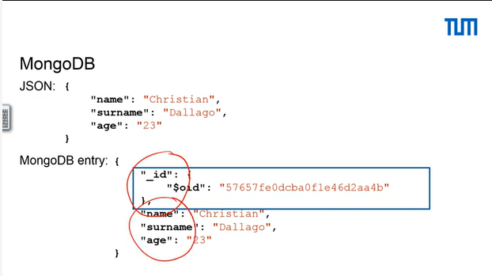
The other things, which you see on the bottom, are the same fields that we have already seen above, which are the name the surname and the age.
To actually use MongoDB in a Node application, you need something called a driver. The most common driver with Node.js is called mongoose. Mongoose allows you firstly, to connect to the database and handle connection events.
The second important thing is that it allows you to define models. Models allow you to enforce some type of a schema, which is the thing that we have discussed before. So, through mongoose you could define that your objects always have to set the same structure and that Mongoose won't accept objects if they are not of the structure that you have defined them in.
The other thing that mongoose allows you to do is to perform queries. So, you can find objects, create objects, update and remove items.Let's see some code examples. First, we will find mongoose in these files. As you see, there is one file, which is highlighted a little bit differently than the other ones. This is because we're not directly using mongoose, but we are using the mongoose model, created in the relationships model in the controller. So, to produce a meaningful response, when an incoming request is coming.
Let's look at the model for the relationships. Here, we define the model of our relationships. Firstly, we require mongoose, as we did, we did with express in our previous example. The second thing that we do is we define our relationships model.
Here, we have three fields, which are compulsory. So, they are always required. If you will try to create new objects, which don't have one of these fields, it won't work. Mongoose will complain. The three fields that we are going to need in our objects are source, target and weight. The first two source and target are of type string, while weight is a number-typed object.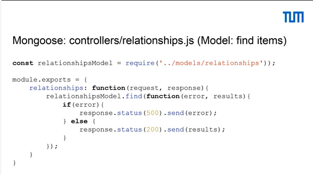
The second location in which we find mongoose is our relationships controller. Here, we can find objects in our model, as seen from the fourth line of code. So, we have our relationships model and we perform a find without filtering for results. Filtering for results would be something like: if I'm only interested in those objects in which the source is equal to, for example, 'me', I would put this as a filtering before I perform the find. You can look at how filtering is done in the examples on the mongoose website.

If the object was successfully created, we will return an anonymous callback function, which will log the created object, as we see below here.
The next thing that we can do in mongoose is to find and remove objects.
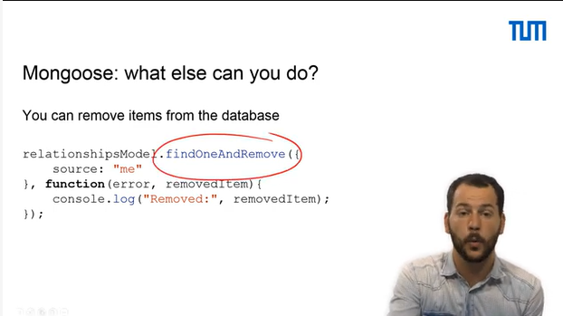
Be careful, we are only finding and removing one object. This is very important, because you can easily remove many items from your database and maybe it is not what you want to do. You have to be very careful when you're coding these parts of your application.
Here, what we are doing is we are finding one object, which is the first object in which the source is 'me' and we are removing it. If the removal is successful, we will log into console the removed object.
Another thing that we can do is to update objects. Also, here, you have to pay attention, because the updates function out-of-the-box will only update the first filtered item that is defined in a database.
In this case, the first time it will find an object, which has a source 'me', it will update it and put or set the target as 'Tommen'. If we only have one object, which is the one that we created two slides back, instead of having source 'me' and target 'you', it would have source 'me' and target 'Tommen'. The weight will always be the same.
What we have seen now, were four basic operations, which are needed in every database. They are called the CRUD stack. They stand for create, read, update and delete. We have also seen, which functions you can use to perform these operations, which are, on the model - the create function, on the model - define function, on the model - the update function and on the model - the remove function. I urge you again to pay attention when you implement the update and remove function, because you can easily generate mistakes within your data.
We have seen two of the components of our example applications and in the next lesson we are going to discuss the missing component, which is the view. We decided to split these three components into the first two and the last component, which is the view, because sometimes you don't need the last component as already explained in previous lesson.
The view engine that we used is Pug, as already mentioned in previous lesson. Pug was renamed after a legal matter with the original name, which was called Jade.
Pug gives us a way to define reusable and extendable HTML components. What this means is that you have to view web pages as pieces, a set of pieces. So, there is the navigation, there are different menus, there is the actual content of the page and, for example, the footer. You can use Pug to define all of these components and use them dynamically in the different views. Pug has a simplified syntax. It's very close to the syntax that you would ordinarily see in your normal HTML files, but it's simpler in the sense that you don't have the closing brackets and you don't have all of this major and minor signs.
In Pug, you can also use control statements, like each and if, which allow you to, for example, handle variables that you pass the view through the controller. So, for example, through the controller you pass the title. You can specify a location that if the title is defined, you want to show the title at that location.


On the top in green, you see the base.pug, on the bottom in orange you see the navigation.pug and on the bottom on the left in blue you see the home.pug.. This is what we want to access when we navigate to the home of our application. We are going to load the home.pug, but the home.pug extends the base.pug, so we will start from there.
The base.pug starts with an HTML tag, which is the starting point of every HTML file. It then has a head part, which contains, for example, metadata about the encoding of our HTML file, which in this case is utf-8. It contains also a link to a stylesheet, which in this case is public/style.css and it contains a title of the page. As I've said, you can pass variables to the pug files and in this case, we pass the variable title as the title of the page. So, when we construct the pug file, we actually pass it this variable and I encourage you to look at the controller for the front-end where this is very visible.
The next thing that we are going to look at is the body. I just see that there is a dot wrapper. This is similar to CSS notation, which means dot wrapper represents a div or a dividing item of class wrapper. Similarly, in UL hash tag navigation we have a UL element of id navigation. We're going to see more what CSS is used for and how it works in later sessions. So, let's look at include navigation. This is an important directive. It tells Pug that when you are loading this file, which is the base.pug, it has to include a navigation.pug precisely in that location. It will then include everything that is in navigation.pug, which in this case is just a ul or unordered list with the hashtag navigation, which means it has the id navigation. One list item, which has an a href, which is a link to the home. Also, the name of this link will be home itself.
The next interesting part of our base.pug is the block content. In Pug, we define blocks, which are extendable parts of our HTML file. In this case, we want to extend the base in our home.pug and we want to extend the base based on the block content. So, we extend block content by writing block content and every element that follows that block content statement will be put exactly where the block content is in the base.pug. So, in this case, we will put there an h1, which will be here is a title and that p for the paragraph, a nice paragraph.
Let's look at the outcome of these three files combined. If we connect to the home, which means example.dallago.us, this is pretty much what we see. As you see, the navigation has been loaded as an unordered list with one list item and then h tag to the home and then we have the extension of a base, which is the home.pug with the h1 title here is the title and the p paragraph, a nice paragraph. With this part, we have covered also the last part of our application. We have seen the views and in the previous lesson we have seen the models and the controls. I invite you to look more at our code together with me in the demonstration, which is going to follow this lesson.
In this module, we saw that Node makes it easy to write JavaScript code for the server-side component of our web application. Thanks to employing a non-blocking I/O module, Node.js scales very well to support thousands of simultaneous connections.
In this module, Chris talked about Node.js and the Node package management system. Chris introduced some of the components needed for web application development and how those could be found and integrated using NPM. Finally, we saw a code example for a small app that pulls data from an API and visualizes it.
In the next module, Dennis will show us what are the current techniques to visualize data on the web and how we can use the D3 library to do data visualization in JavaScript.
Welcome back! In this lecture, I'm going to demonstrate the code that Dennis & I used in our previous lectures.
We are going to see in my specific case the API code. Dennis is going to use the complete code in his demonstrations, which come after mine.
First of all, we need to do download the code. So, we navigate: we want to open up a browser window and navigate to example dot dallago dot us slash public slash API dot zip and then we press enter and this will download, as you have seen from the animation, the API code onto my computer. So, let's minimize Mac’s Safari again, go into the downloads and here we see API folder. And we just drag this onto the desktop, so that it's here.
Good, now we can use our favorite editing tool. In my case I'm going to use WebStorm. It is an IDE. So, it has some nice features, like code highlights, it tells me if, for example, if I mistyped the name of a variable or many JavaScript reserved words. There are other free tools, for example, Brackets. Or you can also download Atom, which is going to be used by Dennis in his lesson.
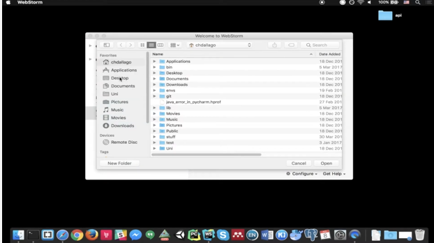
But, again, I'm going to use WebStorm. So, let's fire that up.
Good,
so, now that WebStorm is open, we can start opening up our application
just by clicking open, navigate into the desktop and selecting the
folder. Then, we select open again and WebStorm will open up our
application.

What we see then on the left side is our folder and all of the files that are contained in it. The same thing is reflected if we just open up our folder with Finder and these are the same files that we're going to find in WebStorm.
Good, so, the first thing that we want to look at when we open up a Node application is the package.JSON file I talked about. This also in my lectures and there are some nice and mention-worthy things to look at, like the scripts section, the dependencies and the main. The main tells us which is the most important script in our application. In this specific case it's index.js. The scripts section tells us how to start our application. It says we need to have Node installed and we start by calling Node and then starting from the index.js file. And then there is the list of dependencies, which are expressed in Mongoose.
It's only two dependencies. It's an easy application and both of the dependencies are at the latest version. So, when we see that there are dependencies, we know that to run our application, we must first install the dependencies that are specified here and we do that by calling NPM install from a terminal window.
We can either do that by opening up a terminal window here and NPM install, but just to explain for the people that might not be using WebStorm, we can just open up a terminal window from the terminal emulator from our computer, navigate to the desktop and then navigate to the API folder.

We know that we are there because we're doing ls, we see the exact same files as we see here on the left side and then we can run npm install and this will install all of the dependencies. While the two dependencies that are specified here, but also a lot of co-dependencies, because Express, to actually perform its function, will need some core dependencies, which are for example these accepts, array-flatten and so on and so forth.
There's actually a bunch of these, which come with express and mongoose.

And now if we navigate back to our application here, what we see is that there is a new folder, called node_modules which will collect all of the different dependencies that we just installed. Good, so, next thing we want to do is look at index.js.
Let's open up that file and what we see is that in the very first two lines we have two requirements: the first requirement is express. It's a dependency we have just seen it in a package.JSON and we have just installed it with NPM install.
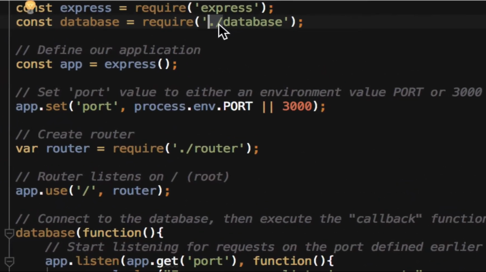
The second thing that we require is database and this is actually a file and we see it from this dot slash at the beginning of the name. We don't have to specify the extension, which in this case is js, as we see here, simply because Node is able to automatically get the extension if there is only one file with that name, and we only have one file, which is called database, and the file is either of the type JavaScript, so js, or JSON, so dot JSON. And this is exactly the case we only have one file it's called a database and it is of the extension dot JavaScript.We don't really need to specify the dot and js here. It is good practice to actually see what this database file does.
Let's open the database.js file. Again, here, at the very beginning we have two requirements: the second one is just a dependency again, as we have seen it before. It is defined in the package.JSON and the first one is again a file and we see this again from the dot slash here and it is the config file, but this time a config file is config.JSON and, as I just explained a few seconds ago, Node is able to automatically guess the extension if there is only one file with that name and if that file has either the extension dot JavaScript or dot JSON.
In our case we only have one file. It's dot JSON. So, we don't need to specify here dot JSON, but if we wanted to, we could. Again, it is good practice to see what actually this file contains.
Let's open config.JSON. In the config.JSON we have only one object. We might have an array of objects if, for example, we started our file like this. This would then be a JavaScript JSON file with an array of objects.
In this case, only one object inside the array. But, again, the file as it is is only one object, it has one key, which is the database and this key has value associated to it, which is again an object and has a few keys associated to that object. So, when we require the config file here, what we actually require is the object that we just saw there and we can look at our database connection string here.And, what we do here is assigning to this database parameters: the config.database key. We are assigning to this value this constant value - the database object here, so all of the values that we see in this object.
We then want to construct a database connection string through these lines of code here and what this will perform at the end, so what we will get after executing this last line of code, we expect to have something like MongoDB column slash slash, which is the first part that we see up here. There, might be a username and a password required to connect to the database. So, username password at some host name, which might be for example, example.com, a port, so 1 2 3 4 and then slash the database collection that we want to use.
For example relationships. So, at the end of executing this code and after this line of code what we expect this variable to hold is this specific string or well not too specific but something similar to this where we have user name password, the host name, the port and the collection that we want to use.
The next important bit we are going to look at is the module.exports. This is an API of Node and it basically tells us that when this file is being required by another file, so for example it's being required in index.js, what is actually being required is what comes after this equal sign and what we are requiring in this case is a function that accepts a callback and that executes some code when the function is being called.
Let's look at what happens when a function is actually being called. The first thing we do is we connect to our database connection string. So, Mongoose connected to this connection and then we assign the database object to a variable, which is called db.
We then have four events here. These are four events and basically what this does is it reacts to certain things that happen onto the database or when we connect to the database. First of all, we want to react when there is a connection to the database. So, we are able to connect to it and what we want to do is log on to the console that we have been able to connect to the database. The next thing that we want to do is to react on this if there was an error. So, if we were not able to connect to the database, we want to log this into the console, telling there was some kind of an error.
Here is the stack and the next thing we want to do is we want to exit our application, because it wouldn't make sense to start our application if we cannot connect to the database, as most of the data that we're going to require to answer some routes comes from the database. So, there might be some inconsistency if we keep the application running, so we want to exit it.
The next thing that we want to do is to react on disconnected. If we were connected to the database, but then for some mysterious reason the connection gets dropped, we want to log this into the console, saying, hey, we've been disconnected and we closed our application just because it's safer to do so.
Last but not least, is the on open event and this is similar to connect, though it's slightly different, because open actually means that we are connected to the database and we are able to query the database at the time that this event is happening. So, this is every time the connection is open. This is the most important event that we have to react on and because of that, this is where we call our callback function here. Again, we have the function defined up here as a parameter of our function and we call it when we are fully connected to the database. This ensures that when we execute this callback function, we are only executing it when we are sure that the database connection is up.Let's go back to our index.js and let's see what happens after we require the database.js file. We are only going to look at the database connection here for a moment and in the next lesson I am going to talk to you about the rest of this code, how the router calls controllers and what the models stands for, but for this leson we are only going to see that we connect to the database and that we start our application.
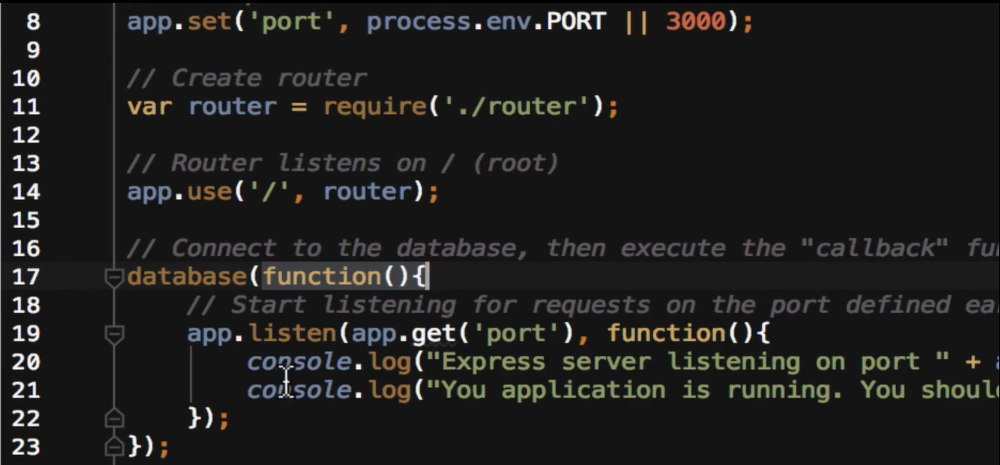
Again, we require a database file here and the next place that we see our database variable being used is down here and we are using it as a function, because again we exported it. We set module export and we exported a function, the function accepted a callback, which is this anonymous function here and what this tells us is that this function, these lines of code that we see here, are only going to be executed when the database connection is up and running when the connection is open. So, we are assuring that our application is going to listen to incoming requests only when the database connection is open. This is very important.Again, because, obviously, we only want to answer to requests once the connection to the database is open, because otherwise we have no access to the data and this is exactly what this ensures us. Now we can go ahead and start the application.
We can do that either by opening up a terminal window here or for the NPM tab here and click on start or from the terminal, just run NPM start, and what we'll see is that it will tell us we are going into node index.js, because that's what we have specified in the package.JSON to be the start of our application.
Then, it will log to console that Mongoose has connected, which is the event connected that we see here - mongoose connected.And, then, we see these other logs, which stem from these lines of code, which tell us ok that we are fully connected to the database. So, we are executing this callback function and our Express server is now listening in our specific port and it is running and our application is running and we should be able to open up this website and see some content.
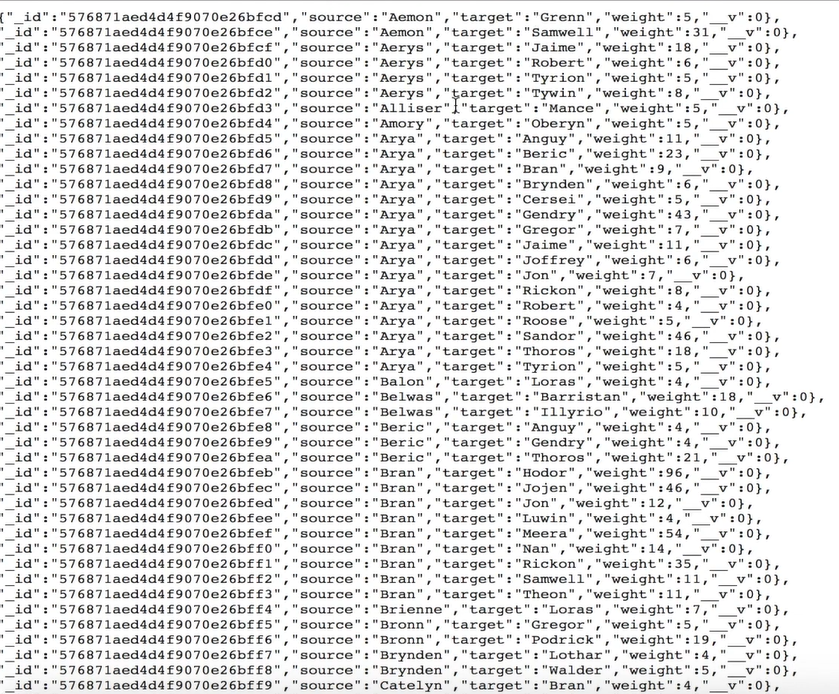
What we will actually do is we will open up this website. So, I copy it, I open up Safari, I paste it in here and what we see is we have all of our JSON objects representing our relationships here, which is exactly what we expected from calling that specific route. So, thank you! In the next lesson I'm going to talk about the router, the controllers, the models and the flow of our application.Welcome back to our demonstration about how our demo applications actually work!
In the previous lesson, I explained briefly what the database file looks like and how it works, and what this function down here actually executes, and that it only executes once we are connected to the database and we are able to query the database. And in this lesson, we're going to see what the router is, what the controller is and what the models are. And we are going to implement a new route into our application.
First of all, let's go and start the application. We can do this again, as I showed it in a previous lesson, through the terminal emulator from our computer or you can do it from the terminal here. My preferred way is actually to just click on the NPM tab and then press on the start script and you will see down here that this is the same output that you get if you run this on a terminal.
I did this in my previous lesson just to show that it actually is working. I'm copying this link over here. Let me just hide these sections, open Safari, paste, enter and this is exactly what we want to see.Our application is running and this are the relationships that I get back from our application. Back here and our application is running. This code is loaded into a process and let's see what these lines of code now do. We have seen that at the very beginning, we are requiring some files and some components of our app and next line of code, that we want to look at, is this one.
We define our application, so our app to be an express application and later we set some variables and we add some components to it. One of the variables that we want to assign is the port number on which our application is going to be listening and we have seen, I'm going to switch back to Safari right now, that we are listening on port 3000 here. This is exactly what we are telling here that if there is no port specified in the environment variables, then by default it will fall back and that's but what the and and stands for here, sorry the or or stands for here.
The default fall back is the board 3000. This is also an important bit to talk about one second and it's the environment variables, because here we can specify some variables, for example, the port number that might differ when we're executing our code on our production servers, for example. It's always good practice to have this variable things, like, for example, the port number or the database connection string to be environment variable friendly or to pull back on some default values.And next thing that we're going to talk about is the router and we see that here we create a router and we create router by requiring a file. I have already explained earlier that we can omit the extension here. When we are requiring this file, we're actually requiring the file that is called router.js, because we see it here, it's router.js. And since it's good practice, let's go ahead and look what is actually contained in our files.
We fire up router.js and we see, this file is very short, it starts with two requirements, well sorry, just one requirement and one assignment. We require express again here on top and then we define our router, which is a new express router. That's what we do in this line here. And then we can assign some routes to it. For example, get requests or we can also assign post requests, put request, delete requests.
These are the requests that I talked about in my lectures. But before that, let's see here, we are actually requiring something else and we call it the relationships controller and this file is actually located somewhere, not right at the root of our application. It's located in the folder app, that we see here on top, so let's expand that. Then we go into controllers and then we are requiring relationships, which is this file over here.Let's double click on that and open it up and what we see here is again, first of all, that we are requiring something else. It's again the file and now the two dots tell us that we have to look one folder before the folder we are in. So, we are in controllers and we need to look at app and then we want to look at models.

We open up the models and then there should be a file, which is called relationships. And, in fact, there is and we're going to open up that. And now here, we actually see an entire code - that there is no requirement of other files within our file tree.
We can start reading this file and from here work backwards and see how a router and power application works. Let's get started on that and the first line again - we require mongoose and that's because we want to create a model, which is the relationships model, that is a mongoose model, and we call this model relationships. And it has some fields that we want to specify that our model has to adhere to.
Specifically, we want our objects inside the relationships database to have a source, to have a target and to have a weight. The source is of type string, the target is also of type string, while the weight is of type number, which might mean - now we can store integer numbers or double or float numbers.
All of the three fields are required. So, we cannot insert elements into our database, which do not adhere to the standard, to say so. All of the objects need to have a field, which is source of that string, a field which is target of type string and a weight of type number.
The last line is the module exports. This we have seen before. This is what happens when we actually require this specific file. And what we're exporting here is exactly the model. The model that we defined over here is what we are exporting down here.
And when we go back to our controllers, we see that we are requiring it here and we are actually requiring the relationships model. Inside the relationships controller, what we are exporting is an object and this object has an attribute, which is called relationships and this attribute actually executes a function, which accepts two parameters. The first one being the request and the second one being the response. These are two parameters, which are passed by let's say to confirm to the express way of dealing with requests.
When you have an incoming request, there are some attributes, which you can read off. For example, where does the request come from, from which IP address, who is the user. If the user is using Safari, is the user using Chrome, is the user using Firefox or something like that. And then the next one is response and this is actually what we are going to answer back to the user that performed the request. Let's go into this function and what we do here is we have a relationships model, that is the one defined over here, the one required from this file and what we do is we want to perform a find.
We want to find the objects inside the model and we do not just want to find a specific object, we want to find all of the objects. We're not specifying anything more. We're just saying from our relationships model: I want to find everything and once relationship model returns all of the object that it contains, we want to execute a certain callback function, which is this one here, which accepts error and result.
This is the type of callback function returned from a defined operation and if there is no error in finding the objects inside my database, then I want to return a response, which contains our results and of status 200, which in HTTP means it was a successful request and I'm returning some results or I'm returning what you expect me to return.
On the other hand, if there was an error, so, if there is an error, what I want to return is a response with the status of 500, which again in HTTP means there has been an error on the server side and I want to send my error back to the user, so that the user knows of what kind of problem might have happened.
We have seen what calling this relationships function actually does. It will answer to a certain request with a response that is either an error or a successful response, and it will return the results of finding all of the objects in our relationships model.
We go back to the router and we were here on this line where we actually required our relationships controller. And, as I said before, in the router we can specify requests that we want to be available from a router. So, for example, here, we specify that if an incoming request is a get request and it matches this URL, then we perform the function from the relationships controller, which is called relationships, which is the function that we have just seen one second ago. We can also change the get to, for example, post.
And this would then be a post request or or a put request, or a delete request. And this obviously depends on what you actually want to do. But, in our specific case, what we want is we want to get data. We want to specify a get request and the difference between get, put, post and delete requests I have explained in my lectures.
What we see here now is that if we navigate to these API relationships, as I said before, we're executing this function and you might have noticed that at the end here, we're actually not calling the function. We're not specifying one specific call of the function but we're just specifying let's so say the blueprint of the function. We're specifying what needs to be called if a user is trying to open up this route and this is because when this code gets executed for the first time, if we had something like this here, we would actually execute the function at on that moment. Say, today I start my server.
This code gets executed after I start my server. It performs this request and this will be stored, let's say her,e and then every time someone calls this call, the same object will always be returned. So, the same array of relationships will always be returned. But obviously, in our database the data might change over time. What we want to say is every time a user is calling this request, I don't want my application to just return the result of the first time I execute the code and I execute this function, but I want to execute a function on the spot at the moment for that user and I want to answer to that user exactly the data that we get back from the database at that specific point in time.
The last thing that we see here is that we are exporting again because this is necessary for the other files requiring this file to know what would we actually want to achieve by requiring this file. And what I'm exporting here is exactly the router object, which is the one that we have defined over here and to which we have assigned a route. I get requests over here.Now, we can go back into the index.json or we actually require the router and we assign it to this variable here. And we can say that our router is listening on the route here and we are using the route of our application.

The last part of the code in our index.js is what we have already mentioned in the previous lesson. Basically, what we do here is we actually start listening. This is the most important part, this is really where we say now we have loaded all of our controllers, we have loaded all of our roots, we have executed all of our logic that we need to bootstrap our application and now we actually want to start listening to incoming requests. And the way we do that is, basically, we say: we start listening on a port that has been specified before.
So, app.get('port') will get this variable, which we have set here and then once the server is actually listening, we execute a callback function and we print on the log that the express server is listening on the port that we have specified and the application is running, and we should be able to connect to localhost + port number + /api/relationships and we should be able to get back the data that we see here. This is exactly the flow of our application what we have just seen.
But, now, what we want to do is we want to specify that we want to have a request where we are getting data, but we're only getting the relationships for the source, that is, for example, Aemon. How do we do that?
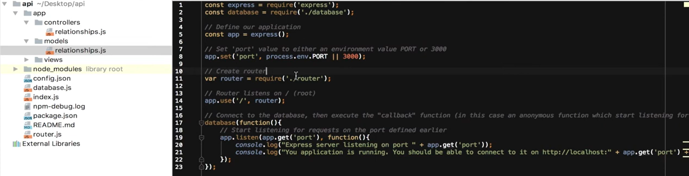
We go back to our webstore and we start implementing a new route. We know that the routes are defined into the router.We don't have to modify index, but we have to modify a router first and a router specified exactly here. We can come up with any name that we want. I'm going to delete the semicolon at the end of this line. I'm going to copy paste this line one line below. It's not the gap request, because we're getting data and we want to get the relationships for the character Aemon and we obviously change the type of the function that we're going to call. We want the relationships only for Aemon and we also have to add the semicolon here, because I deleted it from here before.
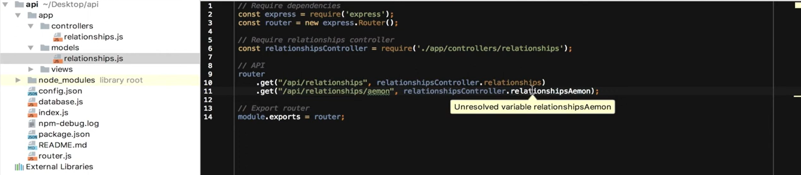
What you can actually immediately notice is that the color of these two blueprints of the function is different and this is because webstorm automatically knows that in the file controllers/relationships there is no key that has the name relationships Aemon and defined. If I hover over it, it actually tells me there is an unresolved variable relationship Aemon. It doesn't happen here, because this is obviously defined. So, what we have to do now is actually to define this function over in the controller.
What we do is, I will copy paste the name of this function, just out of simplicity, I will navigate to controllers/relationships, I append at the end here a comma, then I specify the new function that I want to implement, a colon and I, basically, can copy what is written above here. I say function, then I put request and response and automatically webstorm has already put the parentheses for me. Just to be consistent with the way I have written them over here, I will delete some of the spaces and then what we want to do here is we want to find in our relationships model only those objects, which have as a source Aemon. We can copy what is over here, because this is actually good code and there is no reason why not to reuse it. We can just copy what we have over there and if we look at the documentation of mongoose, we will see that in the find function of a model, we can specify as the first parameter an object.
Let's put an object in and then we put a comma, and we leave the callback as it is. And in this object, I'm going to now return just to have more space here, in this object we can specify what filters to apply on our data before we get it out. The filters we want to apply, as we said before, are that the source must equal Aemon.
This is all we have to do now to be sure that when we perform the find operation on our relationships model, we only filter out those elements of which the source is Aemon. The rest, as I said before, the callback is actually working pretty well, because we will have a very similar result of what we have above here. If we have an error, then we just return there was some kind of an error. This is the error. And if there was no error, we will have some results, which are most likely and hopefully going to be those elements in which the source is Aemon and we will return this element to the user.
Now, I am saving this and as you have noticed, there is no need for me to change the model, because the model is the same. There's no difference there, the only thing again that I'm changing here is just I'm filtering out the relationships, such that what I get is that the source of our relationships is Aemon. Now I have saved this file, there is no modification here, so there's no need to save anything here.
If I go back to my run tab here, I can restart the process and this is needed, because, as I just mentioned, we have modified files here and when we start the process here, what actually happens inside your PC or inside your Mac or Linux machine is that the files that you have here, they are being collected inside the process and the process contains a copy of the files. So, since the copy is outdated, I need to restart my server and I can do that by pressing this button. If I was using the terminal, you would have to press control+C and then you can just type in $NPM start again.
Just for the sake here, I press run again and the output is going to be the same, because I'm not logging anything new.But when I go to Safari now and I have my API relationships root, if I now append Aemon, as you see here, what I will get is a new array. So, this is the array of objects with only two objects and the two objects that I get are with the source Aemon. These are the only two objects that I have in my database, which have this source.
We were successful in implementing this route and we can also confirm that by going back, looking at our complete relationships root with all of our relationships data and you will see that at the very top there's only two objects, which are of a source Aemon and they are exactly the same ones that we get if we navigate back to this root. So, yes, this is exactly what I wanted to show you.
You have seen that it's actually really easy to implement a new root. Probably, you want to do this in a more systematic and a more a reusable way. Instead of defining really specific names for characters, since we're dealing with a database and names might change, you can define a variable here. Basically I can say column name, source name, is even better. Source name. And this way I can use this variable later inside my relationships controller to just filter out those sources, sorry, those objects of which the source is the name that I specify here.
For example, I might write ABC here and then what this value will hold is ABC. Somewhere in the roots over here, sorry, in the controllers over here, I can instead of hard-coding in the name, I can use something like - sourcename. There is more to that, it's actually not that easy. You have to define a couple of things here and there, but it this is just to give an idea of how to make this code more reusable. That’s it.
Dennis is going to talk to you about the visual part of our application. In his example application, there will be also views defined inside of the code, which I am missing in this code, simply because out of simplicity. This is just an API.
In the views part, even if you navigate to index.js, there will be some new lines of code, which you should look into. They are interesting and I'm very sure that if you understand those lines of code, you actually understand how the application works.
That is a good test for you to try out and have fun.Data visualization is an important aspect of data analysis. Creating images, diagrams and animations help us in the process of analysis and data communication.

In this example, we can see that by simply visualizing a large number of data points into a graph, we can start recognizing patterns and trends in our data. Over the past couple of decades, more and more data is communicated online and so JavaScript is playing a unique role in enabling data visualization.
In this module, Dennis will survey the current techniques we use to visualize data on the web. Dennis will then show how we can use the powerful JavaScript library D3 to tell the story of our data in a web browser. Dennis Schwartz is a master student for bioinformatics. He has developed several JavaScript-based visualization tools and he's passionate about open-source communities.Welcome everyone to this part of our course!
This part will deal with data visualization and we'll start off with data retrieval using HTTP requests.
Let's take a look at what we plan to do. At this part we're going to create a simple web site and retrieve data from the Node.js application that you built in previous lectures.
That means, we are moving away from the back-end now and towards the front-end. We'll use data from a dataset called the Network of Thrones dataset and that contains a number of character interactions from the novel of "Storm of Swords". That is the third book in The Game of Thrones series. You might have heard of it. We will then use this data that we retrieved from the API and create a nice graph visualization of the interactions of these characters.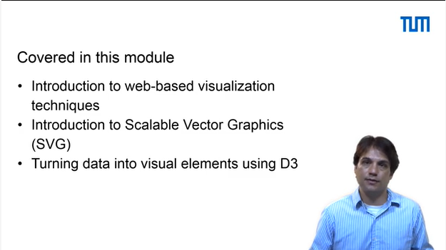
We will use the Pug templating engine that you have been presented in the last part of this course to create the site and then use the D3.js library for the visualization itself.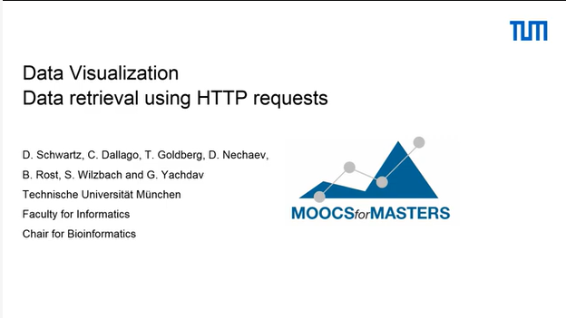
Let's take another look at the architecture of this application. The back-end is the Node.js application that you were presented previously and at this point, we're going to look at the front-end, which is going to be the website.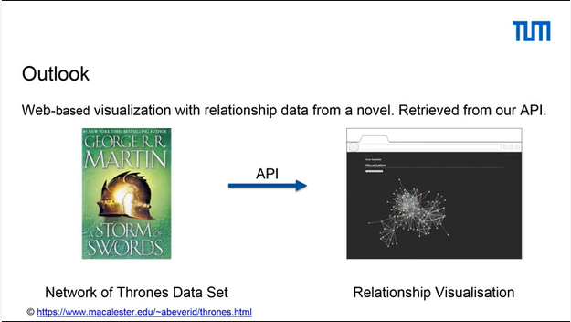
This website will also contain JavaScript and JavaScript will be used to query our API for the relationships of these characters, which we'll then return them as JSON data. And once we have it, we'll try to visualize it nicely.The first step in this is to use the Pug templating and engine and compile template into an HTML file that will be displayed in a web browser.
Then, with the help of JavaScript, we will create the backend server and get the data from there.
Let's take a look at the code you were provided before. In the views folder of the app, you can find four files. You can think of these pug files as building blocks for the web site. These templates will be put together and then compiled into HTML.
For example, the navigation file contains the navigation bar, obviously, which can then be referenced in other parts, for example, in the base file. We don't have to include the code for navigation in every site. The visualization.pug file is where the content for our visualization page will be hosted and we'll try to have a look at that in a second.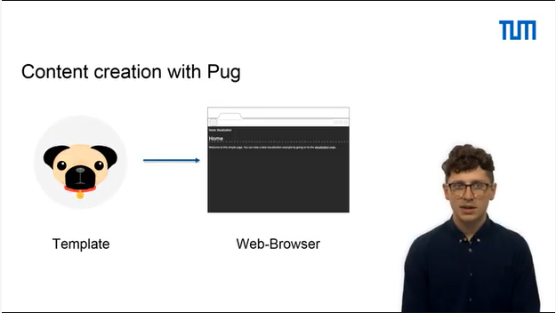
So here it is. It looks quite complicated on the first glance, but, basically, what it has are three major parts: It has a block for meta data, as in the head of the HTML file and it has a block for the content. And right on top, it also says extends base. This means, it will adhere to the basic structure that is defined in the base.pug file and then only check the content in the relevant areas. We have in the styles block linked a style.css file. We'll talk about that later.
Right on the button, there are two JavaScript files. For one, we used the D3 library. So, we have that one linked and then we have another JavaScript file linked that will host the code for data retrieval and visualization.
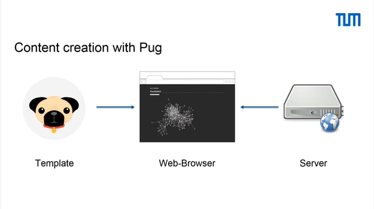
Let's take a closer look at the content itself. There are three parts here. The title itself will be provided by the API or at the router of our application.
We have a button. This button when clicked calls on the JavaScript file and will call the loadData function. Within this function, we will define code that will create direct request to our API, receive the data and then create the visualization. And, finally, we have one more div with the ID root. This is where we'll inject the visualization using JavaScript and D3. So, this is what the page looks like.Again, it has the navigation bar on top, it has a title. In this case visualization and a button that when pressed will initialize the visualization and data retrieval. So, let's have a look at what the data retrieval actually looks like. This will happen in the JavaScript file.
You can find the file in the visualization folder, which is hosted in the public folder of our application. The script.js will host all the code we need.
Let's talk about that code. Creating HTTP requests is a classic application of front-end and even back-end JavaScript.
There are many libraries out there, which try to make this a very simple task. jQuery is a very popular one, but we will try to stick with the built-in JavaScript functions for now. One way of doing that is the so-called XMLHttpRequest object that is built into JavaScript.
When instantiated, this can be sent off to any given URL. In this case, our API end point, which will return the relationship data. And it is also the object, which supports a number of events that will be fired at various stages of this process.
For example, when the request arrives at the back-end, there's an event for that. When it starts sending data, there's a second event for that. And there's another event when it is finished with transferring the data back to the front-end.

And this is the one we will be looking at on the next slide. Here, we see the code that is needed to send the HTTP request using native JavaScript function. It is rather simple in general. It has three major parts.
The first part is instantiating the request object and saving it into a variable. Then, we need to define what should happen once this data retrieval is finished. Meaning, as soon as the data has been sent back to the front end, this onload event is called and we now need to define what happens when this onload event is called. We do that by defining an anonymous function and since this function is called directly on the request object, we can actually access the request object using the this keyword. And the interesting part in this case is the response text. This is where the data received from our API will be hosted.
And then, we can do something with that, symbolized by the doSomethingWith function, in this case.
And, lastly, we need to tell the request object what kind of HTTP request it is. In this case, it's a GET request and we have to tell it where to send it off to. In this case, our API - the relationship end-point. And, finally, we need to send it away. That is all the code is needed to create a JavaScript HTTP request. Also, take a look at the demo lesson that is part of this course. I will demonstrate how to exactly use this code and how to build the onload function presented before.
Let's talk about visualization in general. Why visualization? Technically, all the information that is displayed by visualization is already available in the data itself, but a good example for why visualization is important is the so-called Anscombe's quartet. You can see it on the left side here.
What you see is a bunch of data, what you see is that you can't see much at first glance. However, luckily, we have some mathematical tools to analyze these four two-dimensional distributions. However, in this particular case, if you look at the mean distribution and the distribution means of X, they are all exactly the same. The same goes for the variance of the X distribution.
And if you look at the Y part of these distributions, they are also very similar to at least two percentage points and even more complex things, such as a linear regression line are almost identical for all these four distributions. You would assume that they follow a very similar pattern, that they are even mostly identical.However, as soon as you bring in a visualization of these data points, you will notice that they are vastly different and definitely follow different patterns. This is the reason why visualization is vital for data exploration and by now it has become a very common theme to use visualization on the web, and for that we use JavaScript, obviously.
There are a number of JavaScript libraries for web- based data visualization available, such as the ones you can see listed on the left side of the slide. Today, we'll be using D3 and we'll talk a little bit about why we will be using D3 in a minute.
First, let's talk about ways in which we can visualize data in the browser in general. There are three major ways, basically. The most simple one are HTML elements. They are actually part of the HTML language. That means, they are supported by any browser. They support all the things that any HTML element will support. That means DOM-handling and events and callbacks would make it really easy to make it responsive and interactive. However, they only support very simple shapes, such as circles and lines, and to create more complex shapes, it takes a lot of effort to get it done.
Secondly, a whole different way of creating graphics in a web page are the Canvas and WebGL elements. Now, Canvas and WebGL are different, but these are related, and they work in similar ways. Canvas is for two-dimensional graphics, but WebGL enables three- dimensional graphics in a web browser. And if you have a lot of elements and a lot of shapes to draw, they are very fast. However, they also require a lot of effort to get it done, because every shape needs to be explicitly stated by the user itself. That means that they do not natively support events or callbacks, which makes it very hard to create a very nice interactive experience. They also are based on pixels, like a JPEG or a bitmap picture, for example, which means that they are a resolution-dependent and if you would like to zoom into it, the quality may degrade.
The last way to visualize data in the browser is a very common one and these are called scalable vector graphics, also known SVG and they are similar in the way they work to HTML elements. They provide DOM-handling ability, because they are basically part of the HTML file. That means that you can create events and callbacks when clicking on them, which means they are very good for interactive graphs and visualizations. And because SVG doesn't actually place any pixels anywhere, but rather provides a description of how a shape should look like, it's completely resolution- independent. The problem, however, is that if you have a lot of elements and shapes to draw, as in thousands, it can become very slow and we would probably need to move to a WebGL or canvas-based visualization.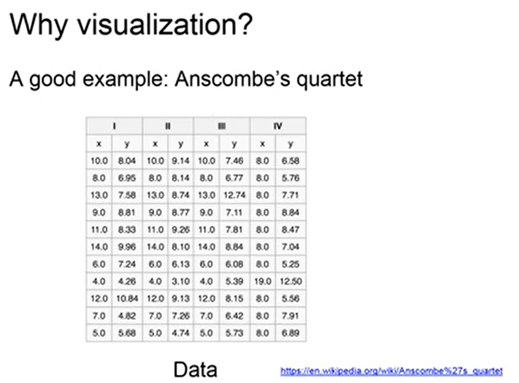
Let's talk about why we want to use D3. If you go to the website at d3js.org, you will see that most of the examples are some form of graph or bar chart, or in some other form of craft-based visualization. However, D3 is not just a graphing library, like some of the other ones that we have listed on a few slides ago. It is a more flexible JavaScript library. It is focused on a more abstract concept of binding arbitrary data to a page element and then applying data-driven transformation to them.
And those can be, for example, SVG graphics. They can also be tables or text elements or any other kind of HTML elements. The main point for D3 is the way that data binding works with D3 and let's talk about what that actually means.
Data binding in web development refers to the assignment of data to specific elements of a UI or, in our case, a website. So, for example, imagine we have a star shape that is displayed on our website and that has an attribute that is defining its color and we also have a variable in our script that is called star color in this case and it holds the color we want the star to have.
We can now assign the variable to the color attribute of the star, so that they are bound together, meaning that if either the star color variable in our script changes, for example, programmatically, that will also influence the color of the star on the website immediately and vice versa as well.If the star color on the website is, for example, through user interaction influenced, this will be reflected in our code and data as well.
The code and UI are kept consistent across changes and D3 uses this as its central working paradigm. It allows the user to bind arbitrary data to the document object model, for example, when providing graph data to create an SVG visualization. And now, I have already mentioned the document object model or DOM a couple of times.
In the next part of this course, we will talk about what it actually means and will also look into scalable vector graphics before we go on to actually create a graph using D3.
Many of you will know HTML already. And if you want to have a closer look at it, there are many great resources to learn online. We will only take a very topical look at it. First of all, HTML stands for Hypertext Markup Language and markup languages are there to structure data. You might think of HTML as a way to tell the browser of what website looks like, but in reality its main focus is there to structure data.
For example, into pictures or text, and only give a very rough topical structure to the file. Now, as many markup languages, it works using tags, as you can see, in the pointy brackets. And this tag has an ID, for example, html.
And for each tag, there's also a corresponding closing tag, which has the same ID preceded by a slash. If you can see here, on the top, it starts off with an html and on the bottom it has a closing html as well, with all the rest of the web page contained within it.
For all the other tags, it works in a similar way. In the way that there's an opening tag, then there is more content and then there's a closing tag.
This example here is actually the compiled version of our visualization site.
We had discussed in an earlier lesson using the Pug template, but if you want to look at it in a different way, you could also see it like this. The html data tag itself contains everything else in the website.
On the first level, the head and body tags, which themselves also contain more data. The head contains the meta data for the website; for example, the title of the page or it links to stylesheets. And, again, HTML is there to structure the data and the linked stylesheets then decide what it actually should look like in the browser.
Now to the right: the body contains the actual content of the HTML page, such as, in this case, script files and a div, like a division element, that is there to group other elements, but it could also easily be a text or an image.
And, basically, what you see here is what we call a tree structure, because if you turn it on its head, the top part is also called the root and then it branches out into more and more complicated structure. You could also call it the model for all the objects that are contained in the document.
that's why, this tree structure is what we mean when we refer to the document object model or DOM for short. And, then, when we talk about DOM manipulation, we talk about manipulating this object, for example, by changing, deleting or adding new elements to the whole structure.
For example, we could add more data to this div element, which again could be pictures or text or, in our case, the SVG elements for our visualization. When we talk about data binding in D3, what we actually mean by that is that D3 is able to create DOM elements or update, or delete them dynamically based on the data it has.
Again, in this example on the left right now, we have a bunch of names and a bunch of relationships, which is going back to the data we got from our novel from the "Network of Thrones" dataset.
Technically, as I said before, D3 could create all sorts of DOM elements. We could create a table from this data and we could create text. But in our case we would like to have a nice looking graphics. We are going to use Scalable Vector Graphics. We're going to talk about them next. What are Scalable Vector Graphics? First of all, SVG is a flexible solution for drawing on a web site and visualizations and it is also very good for graph drawing.
In contrast to a classic picture, like a JPEG or a bitmap that is a bunch of pixels, SVG is actually also a XML based markup language similar to HTML in a way. The great advantage of that is that we can add SVG elements into our HTML file and they become part of the document object model and because they then implement all the features of regular HTML elements, it becomes a very animation friendly and it becomes very interactive, because just as a button or as a link, the elements register when they get clicked on.
And besides drawing shapes, you can also render text in SVG. Let's have a look at how it works. You can see a much more simplified HTML version. At the body, we added a simple SVG element. The element itself again has a tag ID, in this case it's svg, and as a closing tag slash svg.
And it also has a number of attributes. The root SVG element just has the dimensions attribute, such as the height and the width and then the child nodes of this element contain the actual shapes to draw.
In this case, it's a single path element and path element our freestyle shapes, so to say, where the shape of the element is defined by the user, in this case through the id attribute. As you can see, it looks quite complex and complicated, even though the resulting shape on the right is a simple triangle.
Now, obviously, if you want to create more complex animations and graphics, we would like to automate this process. And this is again where D3 comes in.
Here, you can see a more complex example on the top. You see the SVG element with six sub elements or child elements. Three of them are circles, three of them lines and you can see the result on the bottom right. It's a simple graph with three nodes and three links. Now, the color and the shape of all these objects is for one determined by the type of object, such as a line or a circle, but it is also determined by the number of attributes that can be found in these elements. And this is where we can determine most of the features of such a shape, and where D3 can greatly help us.
In the next section of this lesson, we will take a deeper look into how data binding works in D3, and how we can use it to dynamically create these kinds of shapes and graphics.Welcome back to our lecture about data visualization! In this part, we'll take a closer look onto data binding with D3 and we will also create a graph model that will then translate into a visualization on our site.
First off, to create a graph visualization we need two parts. We need a mathematical model of a graph that we'll use to calculate aesthetically pleasing positions for the notes on our graphic and then we will need to translate or mirror these positions to the shapes of our actual visualization.
This is where the data binding part comes in. We'll bind the node position to the position of the shapes in our graph visualization.
To start off, we'll start off with the graph model itself and D3 provides a number of layouts for graphs right out of the box. We will be using a force directed layout today, which works in a way that there are forces that are interacting between the nodes of a graph. We can think of them as gravity.
We will then set a negative value for this gravity, which will cause these nodes to repel each other and ideally they would spread out evenly across the surface of our graphic, but because they are connected by the links that will cause them to create a shape that will still accommodate the links, while being as nicely spread out as possible, which will usually result in a very nice looking graph.
For this to happen, we need to set a number of options on our force layout. You can see them down here on the bottom. There are things such as the charge, which is the force, which interacts for the strength of the force between the nodes, the link distance, meaning the default length of connection between nodes, and it will also have to give the whole simulation the size. So, we need to set the dimension of the area in which the nodes can move and we obviously want this to be the same size as our graphic on the screen later on.
We'll use two variables for width and height, which we'll pass to the size function and we'll also reuse them later for the size of our graphic.
One more thing we actually need for our graph model is obviously the data itself and the graph layout provided by D3 has two more functions we can call to actually pass that data. They are called nodes and links, and we'll pass a set of data that you've already seen before the one about the characters in Game of Thrones and their interactions. In this case, the characters are nodes. In terms of data, it's just an array of names, basically, and the links, which are the interactions between those.
Finally, to actually start the simulation, we have to call the start function. The start function will cause D3 to initialize a number of things internally and we will kind of come back to that in a later slide.
Now, that we have the data model for our graph layout initialized, we'll move on to actually initialize the visualization and then we'll try to bind the model and the position of the nodes to the graphics and the position of the shapes on that graphic.
First thing first, what we need to do to initialize the visualization is we now have to use D3 to manipulate our DOM. In this case, we would like to set or select the root div that we have created in our template, if you remember, and then we would like to use D3 to append a child element to this root div, in this case a SVG element.
And now we need to talk about something else as well, because the way that D3 actually selects elements from the DOM is by using CSS selectors and we'll talk about CSS a little bit later, but generally if you want to learn more about CSS, there are great resources online for that as well. We'll only go to the basics for now.
Basically, in CSS, you have different ways of selecting different types of DOM elements. There are three, actually. We'll only use two for now. You can select an element by its ID and to do that, you use a pound or hash tag in front of the ID, so if you look at the top row here, if I want to select the HTML element with the ID root, I can use the JavaScript function on the right, which is provided by D3. I can say D3.select("#root") and that means that the SVG, one on the left, will actually hold the ID equals root element on the left.
Similarly, I can also use the full-stop. In this case, this will select any element that has the class root attached to it. So, in this case, instead of selected by ID, I'm selecting by CSS class and we talk a little bit more about that later as well. But for now, if you see #root that just means I want to select the DOM element, which has the ID root.
This is what we're actually going to do now. We'll take D3, we'll select the root ID from our HTML file and then we'll tell it - now that you have it, please append a child element of the type SVG, which we'll do using the append function and then we'll also set a number of attributes on this SVG. In this case, we'll set the dimensions.
And, as I mentioned before, these dimensions need to be the same as the ones of our actual mathematical simulation of the node positions. So, we will reuse the width and height variables that we set before.
And if you actually execute this, we get what you wanted. We created a new DOM element, in this case, this SVG element as a child element of our root div with the correct dimensions.
The next thing we need to do is we need to populate this SVG elements with shapes corresponding to our graph model.
So, let's take a look at this slide. On the left you can see some demo data. Think of the top ones as characters from the books. In this case, they're just called ABC. And the bottom on the left, will have a number of connections between those and now, remember, when we call the start function on our layout, I told you that a number of initializations happen, this is what you see on the bottom, on the links data points, that the links actually connect numbers and not necessarily the names like the ABC on top.
This is because as soon as you initialize the layout in D3, D3 will replace all the names with the indices. That means that all the names will be replaced by the position of this name in the name array and, obviously, that is a way to handle cases where, for example, in our case, two characters might have the same name and to distinguish them, instead of calling them A and B, we'll call them name 0 and name 1.
If we now try to add this data to our visualization, we would like to see something like we see on the right. So, we would like to create a child element for SVG.
One circle element for each node and one line element for each link, and we would also like to attach a class to them, so we can label them as links and nodes, because you could possibly imagine that there are other circle or line shapes on our graphic that do not necessarily represent a node or link of the graph.
But what we're actually trying to do here in terms of data binding is, we would like to represent the data we have on the left in the same fashion in our UI or in our graphic, and we'd like to keep those consistent as well. Data binding in this case refers to the consistency that if we remove a node, for example, and the data on the left, this should also be represented in our graphic on the right and if, for example, the user could remove nodes on the graph in our graphic, we would then like to relay this information back to our data and keep it consistent. Now let's take a look how we can use D3 to add new elements to our graphic.
Potentially you could think that we could use the same technique that we used to create the SVG element before to also create the shapes on the SVG itself. So, we could possibly select the SVG and append a line element by hand.
That would of course mean that we have to repeat this process for every line and for every circle element that we would like to add. But instead, D3 provides a smarter way to do it. D3 is a lot about selections and sets of elements and how to join them together.
So, when we try to add elements to the SVG using D3, we will actually try to select all the child elements of SVG that have the class link. And, as you can see on the right, there are none at the moment. So, this selection will actually return an empty set on an empty array of elements.
We can now pass our data to this selection using the data function of D3. So, this basically passes all three links or three data points to the selection and compares them, and we now have two sets of elements. We have the empty set of elements in the SVG and we have a set of three data points in our data.
Now, we would like to combine those together, so that for each data point we also have an element on our graphic. So, again, the links on the left side - three data points we would like to now represent those on the right on our graphic as well.
If you think in terms of sets, this is only one of three possible outcomes. You could, for example, also imagine that we have elements on our data, I'm sorry, on our graphic on the right, but not in our data or you could imagine that we already have the same elements on both, the right side and the left.
So, these are actually the three outcomes that you could have when comparing two sets: on the left in yellow, you have the set of data points and on the right you have the set of elements on our page.
And D3 provides a function for each of the three cases that can happen if we combine or compare these two sets.
If we want to deal with all the data points that are not yet on the screen, we can use the enter function.
If you want to deal with all the elements on the webpage that do not have any representation in our data, for example, because we move that data programmatically, we use the access function and if you want to just deal with all the data points that are already in data and our elements, but, for example, have been updated in the data or the website, we use the update function.
To have it again in text: we use the enter function of D3 to deal with every data point that does not have a corresponding DOM element yet, and we can use this to add new elements to our SVG. On the other hand, the exit function does the exact opposite, if you want. If we call the exit function, it will return us every element that is on the site, but does not have a corresponding data point. This is mainly used to remove elements from the webpage that are not in the data anymore.
And then, if we have a number of elements that are in the data and on the site as well, we use the update function, for example, to update any attributes that might have changed.
So, if we actually do this, you can see, we get the desired outcome on the right. So, on the left, let's go through it again, we select all the links or all the elements that have a link class in our SVG, which will return an empty set.
We'll also use the data function to provide the data points on the bottom of the screen of the slide. So these are three sets. And then, we use the enter function to deal with all the data points that are not yet on our page. In this case, the three links below, and then we'll say, for each of the data points we have, append the new line element to our SVG and then also set the attribute class to link, so we can actually label these lines as links.
Now, we would also like to do the same thing with the nodes. In this case, for circular elements, but we will skip this for now. You can take a look at our accompanying video where we demonstrate how to actually do this in code.
Now, that we actually created a graph model and we created a graph visualization using SVG, we'll take a bit of a closer look into how to control the look of this SVG using CSS and style elements in the next lecture.In this part of our data visualization lecture, we've been talking about controlling element styles using D3. Chris mentioned CSS a couple of times before in this lecture. So, now we're going to take a closer look into what it is and how we can use D3 to actually use it. So, CSS stands for cascading style sheets.
And while HTML is responsible for structuring the data on a website, CSS is actually responsible for how it looks. And if you take a look into the code provided to you during the Node.js example in the visualization folder, you will find a style CSS file. You can see the content of that on the right.
In the previous example, we used CSS classes as a label to denote a line element as a link. You can see it here. So, while we attached this attribute class and set it to link to our line element in the SVG, besides labeling it as a link, we also attached all the styles to find in the CSS class linked to it. In this case, as you can see down here, we set a stroke of the color gray because this hashtag 999 is a hex code for the curve for the gray color. And we also set a stroke opacity, meaning this stroke, or the color of the line, should be slightly transparent.
And on top, you can also see with a similar CSS class for nodes. In this case, we also set a stroke with a white color with the width of 1.5 points. So, if we go back to our code, you can see on the right that the class link has been attached to the links between the nodes and the color of these links is actually gray and it's slightly opaque. Also, as you can see it here on the nodes, the links don't actually touch the nodes directly. This is due to the fact that the node has a 1.5 width stroke of the white color.
If we would have a black background, you would actually see a white line around the nodes, which we have set in the CSS file up here. So, now let's imagine, we would like to change around the width of our links. We could go back into CSS and actually change the stroke width in the CSS file. But, it would be much nicer to be able to have access to these sort of styles directly in our code. And luckily, D3 provides a number of ways to do it. One way is the style function, in which we can set CSS styles directly in the code.
It takes two parameters: it takes the style to be influenced as the first parameter and then the value to set it to as a second. So, in this case, we're setting the stroke width to two points and as you can see in comparison to the slide before, the width of the connections between the nodes has doubled.
How about we would like to change the width of these connections depending on something we have in our data, for example? Or set them each to a different width? Usually, you would have to create a new CSS class for each width you'd like to have, which sounds like a lot of effort and requires a lot of redundancy. So, instead let's take another look into our data. We have two links data that you've seen before. What you haven't seen before is that there are some ellipses here and if we expand that in a single data point, you can see that behind those ellipses we actually have hidden the weight attribute of a connection. In terms of a graph, many graphs are weighted, meaning the links between the nodes have a certain weight associated with them.
In our Game of Thrones example, the weight refers to the intensity of interactions between two characters, for example. And it would be great if you could now set the connections between two nodes to do width depending on the weight of this connection, meaning the more intensive the interaction between two characters is, the thicker the line between those two nodes, representing those characters should be.
So, instead of directly setting the width of all the links to two, we would like to access the data directly, extract the weight value and set it to this one. Luckily, in D3, this link variable up here contains every link element that is in our SVG graphic. That means that as soon as we call the enter function here, anything that comes below this will actually be applied to every single link element in our data. This means, we can also access whatever data is stored in this link element.
In this case, the weight down here. We can now set the stroke width depending on the weight stored in the data point by passing an anonymous function.
D3 will pass the current data point to this function as a parameter and all we now need to do is we need to extract the weight attribute from the parameter and set the stroke width to this parameter. As you can see, on the right, we now have a different stroke width for all the links depending on how intensive the interaction between the nodes or characters actually is. One more thing you would usually like to do in a case like this, is you would like to normalize the data to a certain degree, because the weight can differ drastically, but we would like to keep the thickness of the line within reasonable limits.
So, you would apply, for example, the square root to each of the data points.
You would say: always take the square root of the weight. Or you could also use the logarithm for that. So, it is then more naturally-looking width for the connections.
Now that we have seen how we can use CSS and D3 to actually influence the style and appearance of our visualizations and graphics, in the next part we'll talk about how we can make them interactive using event handling.Welcome to this part of our data visualization lesson! In this part, we're going to talk about event handling in D3 and how we can use events to keep updated with changes in the code and create interactivity for the user.
In the last part, we created a graph model, which calculates the node positions dynamically and we also connect these positions to the graphics and the number of shapes in our SVGs. Now, if you would look into our example, what you could see is that you can't see much. All you can see is little quarter shape on the top left of the visualization and if you look into the code of the DOM, you will see that all the shapes are present. However, they are all located in the default position of (0,0) in terms of coordinates, even though the layout is calculating new positions constantly.
Now, we have connected them, but we are not keeping up with the changed position of the layouts. So, what we now need to do is we need to take advantage of the events functionality of D3 to tell the shapes of our SVG to be updated in terms of position every time our layout is calculating a new position for a certain node. This is handled by the tick event that is implemented by the force layout.
The force layout in D3 actually implements three different events: a start event that is called when the event is first started, the tick event is called on every step of the simulation, meaning every time a new position is calculated for a node, this tick event is called on every node, and finally, an end-event that is called as soon as the simulation is stopped. We'll be taking advantage of the tick event for now and we will tell the force layout to do something as soon as there is a new simulation step completed, and this is something we are going to do.
We are are going to take the positions for the nodes, calculated by this layout, and attach them to our SVG shapes, so the actual position on our graphic gets updated. Now, the position of the node, calculated by the simulation by the layout, is stored in an attribute on the data point called x, as you can see back here and y. So, these are the coordinates, calculated by the layout. However, SVG uses a different attribute to define the position on the SVG graphics.
These are called cx and cy. So, all we need to do now, is we need to assign the cx attribute the value of the data point x back here. This is working the same way that we used a function to assign the line thickness depending on the data in the previous video, and the same thing is working for the link down here, except, this time, we have four coordinates: two coordinates for the starting point of the line and two for the end point of the line.
And, if we now take a look again at our example, you can see there is a nice-looking graph that gets updated dynamically as soon as the node positions change in the layout and if you want to see this in action and actually move around, please take a look at our demo videos. Now, one more thing, we would like to add in this and which is also a great example for the use of events is some sort of user interactivity, meaning, we can click around the graph, maybe drag them around, maybe transform the shape of a graph by clicking around.
That's why we're going to use the on click event in D3, because SVG elements are DOM elements, they do already implement a click event, just like buttons or links do in a website. So, all we have to do now is provide a function that will tell to node what it will do if it has been clicked on.
Remember here that the node selection actually contains every node on our graphic and the click event, so, the function we define here, will be called on the node that is clicked on. That is why we have to use the 'this' keyword down here to select the current node that has been clicked on using D3. So, D3 selects this and then we can change any attribute, we can assign new attributes to this node itself. In this case, we'll change the radius attribute, meaning the size of the circle to 20. In our case, this will increase the size of the node to 20 from 5 as it was before. If you click on the red node, it will change its shape from what you see on the left to what you see on the right.
However, this would happen instantly. Sometimes, it would be nice to create a smoother transition and have a bit of a nicer animation. Luckily, D3 also supports animations.
Of course, it would sometimes be nice to have a bit of a smoother transition between the two sizes. This is where animations come in. D3 already supports animations. In this case, all we need to do is, before we apply the new attribute value, we tell D3 that we wanted animated, they call in the transition function and we will also then specify a duration for this transition. In this case, we'll use 750 milliseconds.
So, if you then go back to our example and click on the red node, it will slowly increase its size over the course of seven hundred and fifty milliseconds until it stops when we have the right configuration.
This has shown you how events can be used to keep track with internal changes and also provide some interactive features. If you would like to know more, see more examples of different events that you can implement and get a bit more detail of how it actually works in the code, please refer to our demo video.
Thank you, Dennis, for this introduction to data visualization in JavaScript!
Summing up this module, we can use data visualization to effectively communicate data.
Currently, there are three dominant techniques to visualize data on the web.
These are HTML elements, canvas and SVG. One of the most popular libraries to visualize data with JavaScript is D3. It allows us to bind data to visual elements and then draw and transform these elements.
Before we conclude this module, we recommend to remember these principles of data visualizations for more effective data communications. In the next module, we would hear Professor Rost, as he speaks about few applications of JavaScript in the Life Sciences. I will then summarize the course and say a few parting words.
Hello everyone! Welcome to the first demo video accompanying the API calls and
data visualization lecture. In this first video, we're going to look at what we're going to build in this lecture, the tools we use, some of the code structure of what is provided and we're going to make our first HTTP requests to our API to get some data to visualize. So, after this lecture, this is what we're gonna have - a simple website. It has very a simple menu appear on navigation, the home page has some text, this is where we are at at the moment and a visualization page.
This one has a button and when I click this button, there will be an API called using HTTP requests that returns relationship data from characters of the Game of Thrones novels. If I click it, it will release that data and create a network visualization using the D3 library. And in this visualization, each of the nodes represents a character and the links between them represent their relationships. And at the end, we guys, are going to add a little bit of interactivity.
If I click any of the nodes, they'll change their color and increase in size. And on a double click, they should back down again and become red. That's what we're going to build now. Let's take a look at what we're going to need first. So, let's close this one for now. We're going to need a couple of tools. We're going to the browser. I'm using Chrome, but Firefox and Safari will work just fine. You'll need a text editor. I'm using Atom and if you're just starting out developing, especially in JavaScript, Atom is definitely a good way to go. It's a free and open-source editor.
It's actually built in JavaScript and yeah it has tons of themes and extensions on plugins. Give it a go if you're not sure what to use. And then, I'm also going to use a terminal emulator, or you know, a shell. I'm using iterm2 at the moment, but any terminal that comes with OSX or any Linux distribution will work just fine. Make sure you have Node installed, however. So, let's take a little look at the code that is provided from previous lectures.
I'm in the folder right now and there's a bunch of loose files and two folders app and public. The first thing to look at is the package.json, which is the heart of any Node application. It has a couple of things, like the name, the version and the description and it has some dependencies as well, which are very important, because we gonna need those to run our local server. The server itself is in the index.js. It is an express server.
So, all we gonna do later is type node in index.js and that will run the server for us. Now, all the server-side code is in the app folder. It has the controllers, the models and the views. These views are template files that will be rendered into HTML and then displayed in the browser. Just a quick recap about what's in the template of our visualization page - it extends the base view, which means they'll include things like the navigation and we don't have to type that code in any page that wants to use navigation, which is provided once and then we extend the other by using the other views. We're linking a stylesheet.
That is just a simple CSS file that defines things like the color of the links between the nodes and we have the content block that has the title you've seen before in the visualization on top, it defines the button and we have an empty root element that we will later populate using D3 with our visualization. And then for that to work, we also include some JavaScript files down here. First one is a D3 library and then the second one is our visualization.js where we will put our own code. One thing to note here is that this button has an attribute called onclick. So, anytime you click this button, the following code is executed. In our case, it calls the loadData function.
Now, to get to that loadData function, take a look at the public folder. This folder holds all the client-side JavaScript code. So, we have a lib folder that holds all the dependencies or the libraries you want to use. In this case, it's only the D3 library, if I actually need to look at that.
We have a visualization folder that has anything to do with visualization. In this case, it's our little stylesheet, just defining what the nodes and the links look like and it has the visualization.js, which is where all the magic is going to happen. So, this is what we're going to get later from the API and then create a visualization.
So, we have two very empty functions at the moment. The first one is the loadData function and, remember, this gets called whenever we click our button. So, we gonna load data from the backend in this one and then we're going to send that data to the second function that will create the visualization on our page using D3. So, in order to get started, we need to use the code that we already have.
You need to run the server, so the client-side code gets executed and provides us with the API, so, we can get some data in this part here. Let's go to our terminal. I'm already in the folder that holds all the code. I can list it here. I actually have a little shortcut for that command. So, if you see me typing l, that is just the one above. What we need to do is basically run the index.js that will create a server and provide the API, so we can work with it. However, there's a little problem, though.
If I run this, it'll crash, because it cannot find the express module it needs to run. So, let me just clear my screen here. What we need to do first is we need to install any dependency. Luckily, because this is an NPM package, you can just run npm install, because if you remember, taking a look back here, the package.json defines all the dependencies we need. So, I'm going to run npm install.
Actually, npm i is enough, because if you type that a lot that actually saves some time. And after a short moment, we have all our dependencies installed. As I clear the screen again, you can see here, I can now type node index.js, run it. Mongoose connected to the database, the Express server is running and we can start getting some data from our API.
If we go back to the browser now, navigate to localhost:3000, we will already get our little page, because the server is running. And, these, what you can see here, are rendered templates that we defined in the server's code. The visualization page exists as well. It has the button. However, when I click, nothing happens, which make sense.
Now going back to our code and opening the visualization.js file, this loadData function is called as soon as I press the button and all of it does, it is writing this little message to our console.
Now, because this is running in the browser, you need to look at the browser console to see the message. In Google Chrome, the developer tools have the console, Safari and Firefox have very similar tools. In Chrome, if you click the little options button up here, you can go to more tools and developer tools or you can use the shortcuts of just alt+command+J or control+command+J on Windows and you can see up here, we have a little message. And if I keep clicking this button, we will get more messages. So far, so good. Let's take a look at what we need to do to actually get some data from our API.
We will be using the classic native JavaScript way to do it with an xml http request object. If you're lucky enough to develop only for modern browsers, the upcoming version of JavaScript actually has a new API, called Fetch. If you are working in Node, you can also use it already, but for now we're just going to use the classic way and as you can see for our little example here, it's really easy to use.
To actually get going, we need three steps. We need to create the HTTP request, then we need to define behavior after a successful request, so what are we going to do with the data that we received, and in the third step, we just need to send it off. Let's start at the beginning. We'll create a new variable that holds our request and it holds an instance of a XMLHttp Request Right. That's the first step - done.
Now we need to define what we actually want to do if the request was successful. And, the request object implement a number of events. Those will be called at different times of the request and then the interaction with the backend. For example, when the request makes first contact with the backend, there will be an event.
When the backend starts sending data, there will be an event and there is also an event that gets fired as soon as the request successfully has transferred all the data from the backend and that's the one we'll be looking at. We can define the onload event now. What we're doing here is basically find a function that gets called every time the request is done loading data from the backend. And now we can create a new variable called response that will hold the data sent from the back-end. To access it, we need to access the request. In this case, we can access access this with the this keyword and then we'll get the responseText. So, that's all that we need.
However, this response text, as it says, is a string and in our case, because we know the API is sending JSON data, this text is actually a JSON string.
What we need to do to use it as a JavaScript object, is we need to do JSON.parse(this.responseText). And now here, is where we find what we actually want to do with the data. In this first video, we're not going to do anything with it. The next one, we're gonna transform it in a way that we can use it with D3 later on, but for now, let's just log it to the console, so we can take a look at it. That's all we need to define here.
The third step and the final step of sending an HTTP request is, we need to instantiate it using the open function. We need the open function to know what kind of HTTP request type we are sending. We will be sending a get request. You will also have to define the URL that we're sending request to. In our case, we are staying in the same domain that we are running currently. So, on the localhost:3000.
Obviously, those define the route on that domain for the API and on the endpoints relationships. And the server is defined, if there is a get request coming to that route, it'll return the relationship data. And, finally, we have to send it off. That's it. It's all we need to get data from the backend using HTTP request in JavaScript. The native way, no external libraries are needed.
Let's get back to our browser, reload the page and click the button again. As you can see, we get returned an array of objects and if we look a bit closer, these objects are relationships of characters. We have an object that has a couple of attributes.
Some of them are for internal use of the API and here are the interesting bits, which is the source of the interaction and the target of the interactions, or two characters, and the weight as well. And, these are all different interactions. That's it for this lesson. In the next lesson, I'll show you how we can transform these interactions, so we can create a graph using D3.Hello and welcome back! This is the second lesson for the data visualization lecture. In the first lesson, we talked about how we can use HTTP calls to retrieve data from an API. In this lesson, we'll be taking a look at how to transform that data, so we can use it in the next lesson to create a graph visualization, like the one you can see here. The data is retrieved from our API in the first video was a list of relationships between characters in the Game of Thrones novels and you can actually see these relationships as the links between those points in this graph. Now, to build a graph like this, we need two things - we need the list of relationships, so the links, we also need the characters themselves who would represent the nodes.
What we're going to do now is you're going to go through the list of relationships and extract a unique list of names, so we can connect them, as you can see here. Let's take another look at what we did in the last video. I'm going to go back to the terminal and in the folder where all our code is housed. Especially, in the top folder that has the index.js file. Now, I'm going to start running our server again using the command node index.js. Our back-end is running on port 3000. I'm going to close this one and go to localhost:3000, go back to our visualization page and, as you can remember, when I click the button, we will get data from the back-end, but no visualization is generated yet. I'm going to use the alt+command+J shortcut again to open up the developer console in Chrome and you can see here is the list of interactions that we got from our API in the first video.
Now, each of these interactions is actually an object. It has a number of attributes and the ones we are most interested in here, are source and target, which are the source and target of the interaction or the relationship. And then the values for these attributes are names of characters from the Game of Thones novels.
Let's go back and look at the code that we generated in the first video. We're in our visualization.js file in the public section of our code and we populated this loadData function by generating a HTTP request, defining what we're going to do with it after it successfully loaded the data and then sending it off. And now, we're going to start working a bit more with this onload function and we're going to transform the response data that we had in a way that we can use it with D3 later on. D3 for generating a graph visualization actually expects two things - a list of Node objects and the list of relationships or link objects. We already have a list of relationship objects and the first thing we need to do now is to extract a unique list of node names. What we're going to do is to take another look at our browser.
We're going to go through all of the link objects of this list and for each of the source and target names we're going to check if this name is already part of our unique name list and if it's not, we're going to add it and then do the same for the target. I'm going to do this for all of the objects.
First thing to do is create a new variable called names and this list of names is going to be extracted from the array of relationships, which is stored in our response object. So, I'm going to use the functional approach here using an array function that is native to JavaScript, called reduce. I'm going to call this reduce function on the response object, or this array of relationships, which is stored in this variable. And what reduce does is it goes over an array of object and applies a function to it, to each and one of those, and it also keeps an accumulator variable that gets filled up as we go along.
What we're going to do is we're going to create a function and this function will be applied to each of those objects. In this case, this function will extract the names and then, back here, we have an empty array. This is our list of names in the beginning. It's empty and as we go along, I'm going to put names in there if they don't already exist. And by the end of the reduced function, this variable will hold to fill up array back here, which is the list of names. And this function up here, we are just going to create an anonymous function, right here in place.
This reduce function is a higher-order function calling this anonymous function on the element of the array and this function gets two parameters. The first one is the accumulator. In our case, that's going to be an array and the first step is the empty one and then the second step it's going to be whatever we did with it in the first step. And it also gets a value. In our case, that's going to be a relationship that is stored in this response array.
Now, what we need to do is check if the target and source names of our relationship are already part of our names object, or list of names. And the list of names, the current one, is going to be stored in our accumulator. So, what we're going to do is to check if this accumulator already has this name as part of it. I'm going to use the indexOf function on the val.target. This checks if the name that's stored in the target attributes of our relationship object is found anywhere in our list of names and if it does, it will return the position of it in the array. And if it is not already in there, it will return -1.
If the name is not already part of a list, we're going to add it. We're going to push the name to our accumulator array, which is the list of names, and then we're going to do the exact same thing except for the source name. source equals -1.
Then, we're gonna push this source name as well. We potentially now modify this accumulator array by adding one or maybe two names. In any case, we want to return this accumulator. So, in the second step, or in the following step, this is now the new list in which there are any names that we added in this step. That's already enough to get a list of unique names from our array of responses. Just going to save the file and I'm going to put log it to the console, so we can take a look at it.
Going back to the browser, I'm going to reload the page, press our button. As you can see, we get a nice list of unique names. So, one more thing that D3 is a bit unique with - we already have a list of interactions or links between names, which are the relationships, except that D3 cannot work with the names themselves. Instead, it needs IDs and the IDs are going to correspond to the position of the names in this array. So, the next thing we're going to do is we're going to go over the response array, which holds our relationships one more time and we're going to replace the actual names with the position of those names in the names array. So, we're going to use, in this case, we're going to say new variable and these are going to be our links we are going to use in our visualization later and that's going to be a response.map(). This is another JavaScript array function and it's very similar to the reduce, except, in this case, we are not going to keep any accumulator. It's just going to pass this anonymous function that will be applied to each of the relationships. In this case, this function only gets the value of the current position in the array and what we're going to do is we're going to replace the source with the position of this name in the names array. It's going to be another names.indexOf val.source.
We're going to check where in the list of names is this name and then replace the name with that number and we're going to do the same for the target as well. And then, we're going to return this modified relationship, so it will be replaced in the array of relationships.
Now, we're going to take another look at what that looks like and I'm going to log both the names and the links. Reload our data. So, now, we have the list of names up here and we have a list of relationships. Except, this time instead of actually having the name Grenn here or actually Aemon right here, we have a number 1, which is the second position in our names array, which corresponds to Aemon and the target is position 0, which will be Grenn. So, that looks pretty good.
Now, we need one more thing to work with D3. As I mentioned before, D3 actually needs a list of objects that represent the nodes. Currently, we have a list of strings that are the names. Now, we're going to need to transform those names one more time into a list of arrays. So, basically, the list of nodes looks like this. It's an array and this array has a list of objects and we're going to give it just one attribute called name. At the end of our next transformation, we want to have an array of objects with where the name attribute corresponds to the name. And this time, we're going to go through the names using the forEach function, another JavaScript array function, and this one also takes an anonymous function and that gets the current value.
In this case, its name and actually whatever you call this variable is relevant, you can call it X if you want, but in this case we're going through a list of names.
So, name seems appropriate and now for each of those names we need to create a new object. So, we need one more variable, which are going to be our nodes. That's going to be an array and for each of the names we're going to create a new object. So, new node object that has one attribute called names and that would be the name variable from up here. And then, we're gonna add this node object to our list of nodes that we're going to use later. Now, this is all we need. I'm going to take another look at that just to make sure. So, our nodes now look like this.
It's an array of objects now and each object has one name attribute. We have now a list of node objects, which hold our names and the list of links, which holds relationships between those nodes and that's already enough for us to start to get to work with D3. And we're going to do this in this createVisualization function in the next video.
So, just to finish this off, what we're going to do is we're going to pass this data, which is gathered from our API and transform in the correct format. I'm going to pass it to this createVisualisation function down there that's just calling the function with the nodes as nodes and the links as links. And that's it! That's already enough in terms of data transformation. In the next video, we're going to take a closer look at D3 and how to you use this data to create our graph. Thank you very much for watching, see you in the next video!
Hello and welcome to the third demo video of the data visualization lecture!
In the first of two videos, we spent some time getting data from an API using an HTTP request and in the second video we transformed that data.
We can start using it for our visualization.
Just a quick reminder: this is what we're building, this is a D3 graph visualization that depicts relationships between Game of Thrones characters. Now, let's start getting into it taking a look at our code. We have the functions that we are looking at before.
This is the load data function that we dealt with in the first two videos. Now, we're going to spend some time to fill the createVisualization function down here where all the actual visualization will be built. Taking another look at the visualization view in our app views folder, we can see that we already imported the d3 library.
Because of that, we can start using d3 in our own visualization file, which has the createVisualization method. Let's get right into it. There's a couple of steps we need to do: we need to create the physical simulation of the graph that d3 does for us and then we have to start adding elements to the website to our DOM. We'll start off with the first bit. We need a couple of settings for our visualization. We're going just set a fixed height and width for it. I'm going to just use 800 pixels, you can use whatever fits your screen best and just play around with it a little bit. So that's two things we need straight away and then we also need our nodes and links that we got from the previous function and that we initially got from our API and then transformed.
We'll create another variable and we call it force, because it's going to be a force directed graph layout and now we can start using d3 by just typing d3 and we want a layout and it should be a force layout. And now we'll use function chaining that d3 uses a lot to set some settings on this. We're going to set the charge, which is basically the gravity settings and the gravity in this case should be minus 220. This is the force with which the nodes will repel each other. If you set this to a lower value or actually a higher value, say that's minus 10, the nodes would stay closer together and if it's something higher or more negative, like minus 220, in this case, they'll be further apart, because the links act like springs and the nodes are actually like magnets repelling each other. And then, there's also the link distance: this basically tells us how long our springs are going to be between those repelling magnets and now you need to set the dimensions.
This actually takes an array of two numbers height and width and we could just write some numbers in here, but we already set them up there and it's always a good practice to keep settings like these that you might need in several places outside of the actual code right here and put them at the top or somewhere you can just change them in one place. It needs some more things; it needs the nodes and we already generated those in the previous video. So, we can just give them the nodes that are coming from up here.
It also need the links and it is the same deal here. And then, finally, we have to start the simulation. This is enough to tell d3 to create a forced directed layout for us using the nodes and links provided and start a simulation. And we go back to our site. This one's actually currently empty, because I still need to start our web server. This one's the demo of the finished version. We're going to look at our current state. Again, localhost 3000 the visualization is going to run it and, as you can see, it's the old state from before.
Now, in the background, d3 is already calculating node positions and the graph in itself. However, we haven't actually told d3 yet how to display it. So, the next step we need to do is we need to start adding SVG elements to the page and if you remember in our visualization view, there's this empty element with the ID root. And if you take a look at our browser and using the developer tools, we can look at the website.
There's this root element, it's currently empty. It just has the attribute root. So, we can identify it and other than that there's nothing in there. So, we're now going to start using d3 to manipulate the DOM by adding elements depending on that data.
So, because it's going to be an SVG element, we're going to call the variable SVG. I'm going to use d3 select and this will allow us to select a DOM element; in this case, the root element, and because it has the ID root, it has the prefix of a hash tag (a pound symbol) and then we want to add a new element, which is an SVG element for our visualization. We're going to append an element of type SVG. It has several attributes. It has a width and again you can just use a variable and another attribute that's the height. If we now take a look at our site, reload the site (press the button). We have now added a new SVG element of our defined width and height.
Now, the next thing you need to do is to add a number of elements that represent a graph depending on our data and, in this case, we need a number of links and nodes. We want to define what a link should look like and for that, if you can remember our lecture, we're going to use the d3 way of adding data, which is by selecting all elements with the class link attached to them (which will be none at the beginning) and we're going to compare that to our data. Our data, which are stored in the links variable and this we will now do a comparison between the elements found up here and the elements found in here and that will be like a Venn diagram.
Comparing these two sets and then we have three subsets that we can access and we want to access anything that's in here that doesn't have a representation in the links already in the page and for that we use the enter function. And for each one of those elements we want to append a new element to our graph and it's going to be an element of type line and that will already append a line. Now, we already gave you a visualization.css file that has two simple classes; one for the style of the link and one for the style of the node and it just has the color for the stroke and a bit of opacity. And the node also has a color and again for the stroke and the settings for the width of the stroke to get a nice little wide stroke around it.
So, we're going to set this one as well. We're going to set any line element. We'll get a class attribute with a value link and that's going to be enough to define the link. Now, we're going to do the same for the nodes variable node svg.selectAll elements with the class node attached to them. And
compare them to the data and nodes. It needs to be a function, so they need the period infront of them, and then give me anything that is in the data, but not in the page and for any of those append a new element to our SVG graphics. In this case, a circle element and this one will also get the attribute class with the value; this time it is going to be node. Realize that this function to be a class attribute is not just important for the style of the class, but also because we are selecting any node element here, so any element with the class node.
So, it's not just for the styling the CSS, but it's also a label. Then, because, these nodes are circles and the circle is a defined SVG element that needs another attribute, and this attribute is the radius of the circle we want to have and this one is actually defined by the r attribute and r needs a number and that's going to be pixels. So, I can technically put five here, but, as we said before, that's maybe not the best practice. Instead, I'm going to pretend there's a new variable called nodeRadius
and I'm going to go back up to my settings and actually create that variable nodeRadius and set it to five. So, now, we defined the style and, in this case, also the radius for the nodes and we told d3 that we want a bunch of links for our links and a bunch of circles for our nodes. Now, let's go back to our website, refresh the page, so the JavaScript gets reloaded and click the button again. As you can see, something has happened. If I take a look into the root element again, we now actually have added a bunch of lines and, further down, circles to our SVG visualization. Now, if you look closely, you might be able to see there's like a little something on the top left of our screen and these are
actually our nodes. So, this is like a quarter circle and it is because
these are our circle elements, but all of them are positioned at position zero,
which in the visualization world means the top-left corner of the screen.
So, it's like the classic Cartesian coordinate system that you probably know
from your Math classes. Except zero, zero is actually on the top
left. So, one more thing we need to do. Because in the beginning, we created our
forced layout that is this bit here that tells d3 to take these nodes and links
and start a forced layout simulation of the positions, and we told it for every
link we want the line of every node. What we didn't do yet is actually connect those together, meaning we now need to tell d3 actually the position for these links and nodes should be whatever you are calculating over here. And in this case, we actually start looking into events. So, what we're going to do, and we need to do this down here, because we're going to need the nodes and the link, so we need to do it after we define those, we're going to go back to our force simulation, which is stored in the force variable. force.on() and on is the JavaScript way of dealing with events. So, whenever a tick event is fired, I want the following function to be called, and tick is the event that gets called every step of the simulation of this force layout. So, whenever it's calculating new positions, this function
will be called. So, what we're going to do now, every time d3 calculates
new position for nodes, we're going to start adding attributes to our nodes. So, in this node variable, we still have stored any element with class node and after calling this, there will be a class node element for any of our nodes in the data. So, what we're going to do now on every tick, we're going to update two attributes of our nodes and those two attributes are defining the position.
The first one is cx at the position in the x-direction and it's going to be defined by a function and in this case, this gets a data point and that is d3 convention. This data point is actually going to be our node as calculated in the force layout up here.
What's happening in this calculation is that we have our node element that you can remember from the lecture before and that one has a source and a target - in the case of the links and just the name in the case of the nodes.
What we're going to do every time this function is called, we can access the node element used in our force layout using this d variable. So, what we're going to do is going to set the x position of our node to whatever d3 have calculated for the x-position in the graph simulation, in the physics simulation that calculates the position. So, with now doing this, we're going to connect the x position of the node on the screen to the x position to the node in the physics simulation and we're going to do the same thing for the y position, return this time dy. Let's try it and see if that works.
Aha! And now all the nodes get the position that d3 has calculated for them in our physics simulation. Next thing we need to do is do the same thing for the links and let me just make that look a bit nicer. In the same tick event function, we're going to also do the same to our links, except this time, we need to define four different positions, because the link has a beginning and an end position and then there'll be a line between those.
I'm going to start off using x1 which is the x position of the beginning of the line and it's going to be the same thing function d and this time our link element has a source and the target and those get separate positions calculated by the physics simulation. So, we're going to say source.x, and then next one it's going to be the y position of the beginning of the line, and this one is going to be source.y, target is going to come next.
Now, the third one is x2, x is position of the end of the line. This time, the target x position and, finally, the y2 attribute function d return the d.target y. Now, we set for each of the link elements, we set the x and y positions of the source of the link and the x and y position of the target of the link. So, after saving that file, gone back to our simulations, reload the page, hit the button, et voila! We do have a nice graph with nodes and links in between them.
Now, it doesn't quite look like our demo in the beginning yet, because that doesn't have any colors and also nothing is happening when I click on any of the nodes. So, there's going to be a couple of more things we're going to do just for fun. So, we added some styling using the classes node and link in our visualization file over here, but all they define is a stroke and now we're going to try it and define the colors of the nodes depending on the name of the characters. And for colors d3 provides a number of functions. The first thing we need is a scale. We're going to define this one up here again just by going var color equals d3.scale.category20. So, what this does is, it returns a scale of 20 different values, discrete values, and we're going to use those to select 20 different colors depending on the name of our characters.
So, this returns a function, so we can now call this color function with any string and it will just return us a color. So, going down to our node again and now we're going to call another function on this one, called style. And you want to fill the node with a certain value and this again takes the function and it gets the d element, which is the current data point or datum and we want to set the fill element of that current datum to whatever the color function gives us for the name and we know that our current data point has this names element, because we defined that in the last lecture that all the nodes are objects with this name attribute. Click on back to the site, we're loading it again.
Now, all the nodes have different colors depending on the name of the character and you can see that some of them appear multiple times like the red one for example here. That's because we have about around 100 characters, but only 20 different colors in our scale. They're not all going to be the same, but if you really want to have unique ones, you can also write your own color function, for example, here, instead of using the d3 one. Just play around a bit if you like.
There are two more things that have been in the demo that we haven't done yet. So, one thing I'm going to do is I'm going to define the width of our links dynamically depending on the weight of the relationship object that we got returned from the API. Again, we're going to use the style function, but in this case I'm going to fill. It's actually going to be the stroke width so we're going to define the width of the line between two nodes.
Again, function receives the current data point and then this gets called for any element that has the class link attached to it. And we can just return the d.weight here because all of the link, all of the relationships that we got from the API actually have a weight attribute. Now, if you take a look at that. Well, it doesn't really look too nice, because there's a big difference between some of the smaller ones and the bigger ones and some of them are quite large, so it becomes a bit ungainly. What I'm going to do is I'm actually going to use another built-in JavaScript function from the math library, which is the square root. I'm just going to square the weight and now it looks a lot nicer. As you can see, the characters that are having more intensive relationships have now wider links between them than those that have like a less close relationship.
If you remember the demo I showed you in the beginning of this video and the in last few videos as well, we also can define an interactive behavior of the graph. There is a couple of things we can do. If you'd like to see some more advanced examples, go online and you can see things like dragging them around, so they respond nicely to input. For now, we're going to focus on making them clickable. For that, we are going to add two more event functions. So, we're going to take a look at the node and this time you're gonna implement an event on the node itself. So, the node is a DOM element and as such it responds to click events, so if I click on it, it get registered by the browser and we'll fire this click event on this node element. So, I can define what's going to happen whenever this click event is fired, and I'm going to use d3 again and what I'm going to do is I'm going to select this specific node using d3 and change some of its attributes. So, I'm going to do it d3.select and this time because this function is called on the node itself,
I'm going to select this and now I can start transforming whichever node I or the user has clicked on. And what I'm going to do is, I'm going to set the attribute radius to 20. Actually, because, we already have our node radius, let's just set it to whatever the node radius was times 4. If I save that, go back, reload, run the visualization and I'll click on any of the links, they are four times the size then before. Now, that's nice but looks a bit abrupt. One of the things that d3 is really good at is making transitions look smooth and nice.
We're going to add a little bit more to this and then add a transition and this transition function needs to be called before the actual change of attributes. So, I'm going to just tell it to transition and then I also need to define how long that transition period is going to be and that's in milliseconds and I'm going to make it nice and slow, so you can see it, so 750 milliseconds. So, save the file and go back and reload our graph again. If I now click any of the nodes, get it a little nice and slowly transition from one setting of radius size to the next. And we can also just for the fun of it maybe add another transition. So, let's say you want to change the fill color and I'm just going to change to red so whenever I click on it, it will increase its radius by times 4 and it fill the color red. And you could take a look at the d3 documentation, there's a whole number of things you can do with this and it's a lot of fun to play around. So, just spend some time with it if you're interested. Now, this is fine, but what if you want to go back. So there's a number of things we could do. We could for example start storing the previous size or color, you know node itself, and then on a different event go back to that. So, now we're going to keep it simple and just going to define another event on the nodes. A node on double-click I want something else to happen.
More specifically, again, I want to select the current node using d3 and again I'd like it to transition nicely to the same duration and I'm just going to return the attribute to its original radius, so node radius again, and I'm just gonna set the color to white to say okay I've been here before, this one has been clicked.
So, now I can click it. It will get big and red on a double-click it will go back to white. So now, with a few simple steps and a few lines of code we've created a nice and interactive graph visualization using d3. There's a number of things you can add to that. Play around with it and it's a lot of fun. There's a whole bunch of documentation and tutorials available on d3 online. So, take a look at it.
We have been using the version 3 of d3. There's an upcoming version 4 that changes some of the functions and the way to interact with it. So, take a look at that if you see this video in a couple of months from now or so, but the basic principles are all the same. It's just that some of the functions have been simplified or moved around a little bit. This is all we need to create this visualization: we have our forced layout physics simulation that calculates our node positions, we created a new SVG element on our DOM on the HTML page to actually populate with our visualization, we created a bunch of link and node elements in SVGs for lines and circles and then we connected the positions for the calculated positions of the physics simulation to our SVG elements on the page, and then also added some events for interactivity. I really hope you enjoyed these demonstration videos to our visualization lecture. Thank you very much for watching!Congratulations on finishing the series of lectures about developing a web application using the power of Node.js! The knowledge you acquired in the lectures and in the exercises will enable you to develop your own web or mobile applications entirely in JavaScript. In this series of lectures, we first covered the language basics, explaining the syntax and structure of a JavaScript program. We then saw that you can use objects and functions to structure your code. JavaScript is no longer a language that is just intended to be used in the web browser. Instead, we saw that JavaScript can now be run on the server side, allowing you to write JavaScript code both on the front and the back-end side.
Finally, we saw that you can use JavaScript to turn data into interactive visual elements. So, by completing this course you should now be comfortable creating an end-to-end JavaScript application. We encourage you to continue and explore advanced topics, such as learning more on how to use web development frameworks or how to take advantage of functional reactive programming. We hope you enjoyed the set of lectures and we wish you good luck working with JavaScript!Hello! My name is Burkhard Rost. I'm the Chair of Computational Biology in the department of Computational Biology and Bioinformatics at the Technical University in Munich at TUM. I got into Computational Biology, into Life Sciences, as a physicist, because I was fascinated by watching seeing protein structures in 3D. The intricate details of these shapes of protein 3D structures, something that I just found so absolutely fascinating.
And I saw them on SGI's, then on screens that, in fact, I had 3D glasses, I could look at the protein, I could look at what is behind this protein. And it absolutely fascinated me. It took over 20 years before we could do something, such as what I then saw on very expensive machines for everybody. Now, today, visualization is simple.
Today, we all are used to seeing 3D information on our home screens, on our computers, but the moment until we got to the point, so it needed something, in order to, really span between making it simple and using biological data, and the thing that connects these two extreme points really is JavaScript. It's the language, it's the bridge. JavaScript is extremely easy to share, it's extremely easy to write, is extremely easy to learn quickly. You need, in order to use it, just a browser and it allows a very easy interpretation of data, it allows easy writing.
Now, it is important to use JavaScript as a means of visualizing very complex data. In Biology, data is complex. Well, complex data we also find in other fields. We find it in Astrophysics, we find it in Physics, we find it in Finances, for instance, and other examples. The difference really is that in Biology, in some sense, the data, I'd argue, is even more complex. Another issue is that in Biology data is constantly changing. What today is the top data, tomorrow nobody will care for.
Tomorrow, being in five years from now. Now, that means we need an interface, a bridge, between the data and visualization of the data, that in fact is very easy to handle, very easy to write and that, again, is exactly JavaScript. That is why JavaScript is uniquely fascinating for Biology and hopefully will allow us to make more sense of complex data, which, in fact, I believe, will help us to get a better healthcare in the future. More and more Biology, Molecular Biology, modern Biology will intrude where we see a physician and I believe this will really contribute to helping to get a better treatment for all of us. More health for all of us. When we taught JavaScript, one of the examples that we used was the Game of Thrones. Initially, we used it, because that was a relatively easy data set to use and to motivate students. Biological data is more complex, but even from these simple first implementations we learned something about how to do JavaScript and something that gave us a new idea how to in fact look at protein interaction visualizers.
JavaScript also allows you to come up with a quick solution and then that quick solution may give you a new idea where to go. This again is an interactive way of using visualization, in a way that we haven't had before and it's really easy for everybody to use. I hope you will enjoy the JavaScript course. I hope you will enjoy programming JavaScript and I hope you will contribute to the growing body of things that will help Science and Life Science in particular. Thanks for being with us! Burkhard Rost, bye bye.
…The end…